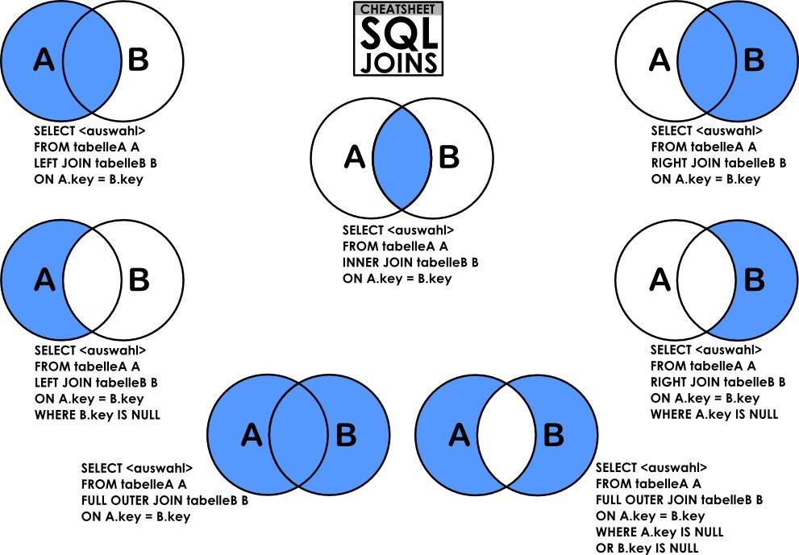
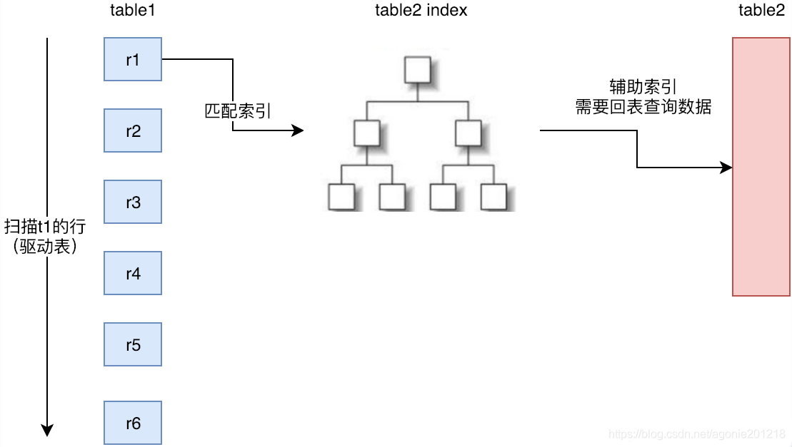
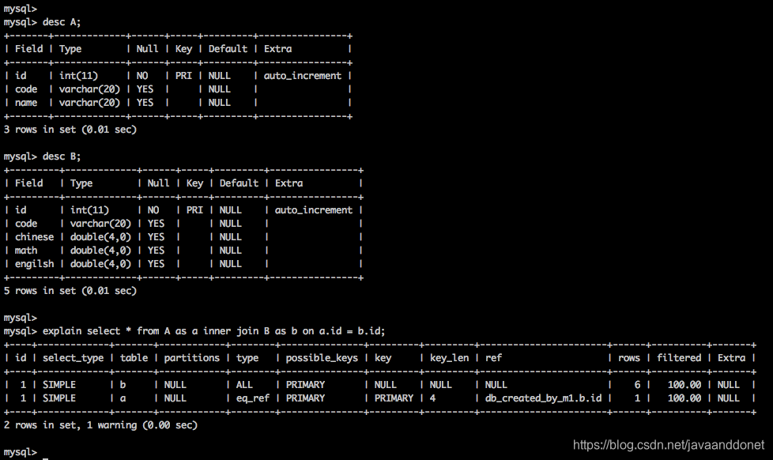
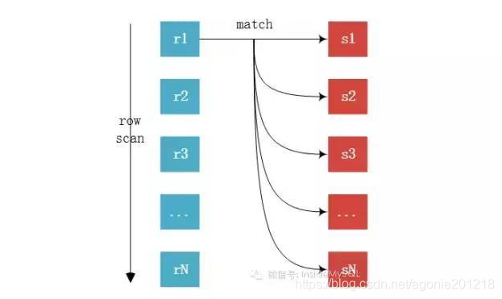
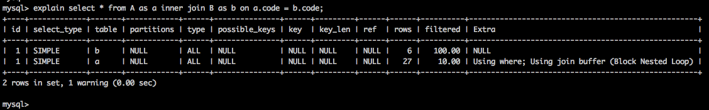
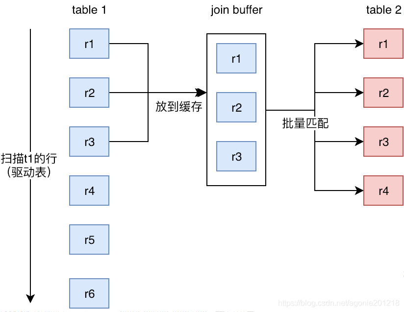

高性能 MySQL
译者序
MySQL 最初是放在 LAMP 里一起讨论。
淘宝网最初使用 LAMP 架构，使用 MySQL 4.0。03 年底改用 IOE，从 08 年开始又筹划去 IOE。09 年的时候 MySQL 的架构也从垂直拆分改成水平拆分。2012 年 MySQL 的单库已经有了 6.5 万的 QPS。
本书是 mysqlperformanceblog.com 的几个专家（同样也是 percona 的创始人）的作品，对于 InnoDB/XtraDB 等存储引擎的性能优化和诊断方法有很深入和详细的介绍。
推荐序
作者在性能优化领域工作多年，这本书诞生于 MySQL 还没有什么可扩展性和可测量性的时代，直到现在这些方面已经有了长足的进步。说到合理的方法，他们简直把这件事当成了科学，首先定义需要解决的问题，然后通过合理的猜测和精确的测量来解决问题。
性能优化 = 定义问题 + 猜测 + 测量
要关注：
- 吞吐量
- 响应时间
吞吐量 = 线程数/响应时间
追求新技能，如排队理论对性能的影响。
MySQL 的架构和历史
MySQL 能够应用的场景：
- 嵌入到应用程序中
- 数据仓库
- 内容索引
- 部署软件
- 高可用的冗余系统
- 在线事务处理系统
MySQL 最重要、最与众不同的特性是它的存储引擎架构，这种设计将查询处理（Query Processing）及其他系统任务（Server Task）和数据的存储/提取相分离。
MySQL 的逻辑架构
第一层：client + connector。连接处理、授权认证、安全等等。
第二层：Server。职责是：实现函数、查询解析、缓存、优化，所有的跨存储引擎的功能都在这一层实现，包括存储过程、触发器、视图。
第三层：storage engine。实现数据的存储和提取。每个引擎都互有优势（pros）和劣势（cons）。server 和 storage engine 之间通过统一的接口 API 进行通信。存储引擎层不解析 SQL。
连接管理和安全性
（在 Server 层）每个客户端连接都会在服务器进程中拥有一个线程，这个连接的查询只会在这个单独的线程中执行，该线程只能轮流在某个 CPU 核心或者 CPU 中运行。服务器会缓存线程，不必为每个新建的连接创建和销毁线程（常见的设计模式，要考虑伸缩性，和线程池的分层）。MySQL 还支持 SSL 连接，所以具有使用 X.509 认证的能力。
Server 层有自己的 privilege 模型。
优化与执行
MySQL 会解析查询，并创建内部数据结构（AST），然后对其进行各种优化，包括：
- 重写查询
- 决定表的读写顺序
- 选择合适的索引
用户可以通过特殊的关键字提示器（hint），影响它的决策过程，也可以通过解释器（explain）来理解 server 是怎样决策的。
用户可以优化：
- 查询
- 优化索引
- 优化其他查询条件
- 优化翻页
- 优化排序
- schema
- 配置
进而使应用可以高效运行。
优化器并不关心使用什么存储引擎，但存储引擎会影响优化器。优化器会询问存储引擎一些统计信息，包括但不局限于存储容量、具体操作的开销信息、表的统计信息，进行一些类似 cost-based 的优化。
对于 select 语句，在解析查询以前，Server 层会先检查查询缓存（Query Cache），如果能够找到对应的查询，则不再进入 parser、optimizer 和 execution 的全过程。这要求 server 层能够很好地控制 cache 的 consistency。
并发控制（Concurrency Control）
理论上只要有多个查询（事务或者事务里的语句）在同一时刻修改数据，都会产生并发控制问题（另一种的 Race Condition）。
邮箱的例子：邮件如果是单链表，并发访问可能导致数据结构的分叉。所以基本的方案必须通过加锁来维护数据结构的正确性（也就是业务的正确性）。然而加锁的方案只是基础方案，不是一个高性能方案。高性能方案应该是混合使用 lock 和 lock-free 的方案。
读写锁
读通常没有问题，但通常的业务逻辑总是读写混合的。所以锁系统应该提供差异化的读锁（share lock）和写锁（exclusive lock）。
读锁相互共享。
写锁相互阻塞。
锁粒度
尽量只锁定需要修改的部分数据 - 只对修改的数据片进行精确的锁定，是在并发力度下性能最优的锁定策略，可以尽量避免锁冲突（lock contention）。
锁本身也需要资源，这部分的性能开销往往为人所忽略。
在存储引擎的设计中，锁管理是个非常重要的决定。将锁固定在某个级别，可以为某个应用场景提供更好的性能，但同时会支持对另外一些应用场景的良好的支持。
最容易被忽略也最常见的表锁的使用场景，Alter Table - 所以需要 online ddl 工具的支持。
server 层可以自己实现表锁，存储引擎层也可以实现表锁。server 层的表锁可以直接忽略存储引擎层的表锁。
行级锁
行级锁可以最大程度地支持并发处理（同时也带来了最大的锁开销）。
只有存储引擎层可以实现行级锁。
事务
在理解事务以前，接触数据库的其他高级特性言之尚早。
事务就是一组原子性的 SQL 查询，或者一个独立的工作单元。事务其实是所有 statement 的组。
银行的模型，saving 和 checking，需要三个步骤：
- 检查支票账户的余额高于 200 美元。
- 从支票账户的余额中减去 200 美元。
- 在储蓄账户的余额中加入 200 美元。
1 | |
ACID 的标准定义：
原子性
一个事务必须被视为一个不可分割的最小工作单元。
一致性
数据库总是从一个一致性的状态，转换到另外一个一致性的状态。
隔离性
事务的修改在最终提交以前，对其他事务是不可见的。
持久性
一旦事务提交，则修改可以被永久保存到数据库中。即使系统崩溃，变更后的数据也不会丢失。
事务的出现使存储引擎对资源消耗变大了，因为支持事务则流程会变复杂。用户可以选择使用事务的存储引擎，也可以选择不使用事务的存储引擎（不支持事务也支持 LOCK TABLES 等操作，一样可以进行并发控制）。
隔离级别
可读未提交
大多数情况下，无益处（虽然性能最好）。
可读已提交
一个事务开始时，只能看见已提交的事务所做的修改。
这个级别又叫不可重复读（nonrepetable read）。
可重复读
每个事务从头到尾都能得到 consistency read。但因为不能防止 phantom row 所以不能防止 phantom read。
可串行化
强制事务串行执行，每一行都加了锁（最起码每个 select 隐式地成为 select in share mode）。
死锁
InnoDB 可以自动检测死锁，也可以自动处理死锁-将持有最少的 row x lock 的事务进行回滚。
避免死锁的方法是避免数据冲突。
事务日志
WAL 就是事务日志，通常是追加写。
写完事务日志以后，buffer pool 里的 dirty pages 会通过 fsync 之类的操作写进磁盘里。
MySQL 中的事务
支持事务的存储引擎有：
- InnoDB
- NDB Cluster
- XtraDB
- PBXT
自动提交（autocommit）模式
MySQL 默认会设置 autocommit 为 1。autocommit 对 InnoDB 生效，对 MyISAM 不生效（相当于 autocommit 总是为 1）。
大批量操作数据的命令（如 ALTER 类的 DDL 语句），会强制操作对事务的修改提交。
在事务中混合使用存储引擎
同一个事务可以跨表操作。
表可以由不同的存储引擎存储。
混合使用事务性和非事务性的存储引擎会导致事务无法回滚。
所以表要显式地指定存储引擎。
隐式锁定和显式锁定
insert、delete、update 会隐式地锁定表里的记录。但 MySQL 支持如下的显式锁：
- select … lock in share mode（非 SQL 标准）
- select … for update（非 SQL 标准）
- LOCK TABLES（server 层）
- UNLOCK TABLES（server 层）
（InnoDB 中的）MVCC
包括 MySQL、PostgreSQL、Oracle 都实现了 MVCC，但各自的实现机制不一样，因为 MVCC 没有统一的标准（没有人能说其他实现是错的）。
可以认为 MVCC 是行级锁的一个变种，但大多数情况下 MVCC 代表着无锁操作。
MVCC 为每行保存了两个隐藏列，一行保存行的创建时间（创建事务版本），一行保存行的删除时间（删除事务版本）。这里说的时间，实际上指的是系统版本号（system number version）。每个事务开始的时候，会取当前事务的版本号，作为事务自己的版本。
SELECT
- InnoDB 只查找版本早于当前版本的数据行（行的系统版本号小于或等于事务的系统版本号），这样读到的数据，要么在数据开始以前就已经存在，要么是本事务创造的（如果这是一个长事务，则之前已经 insert 过很多带有本 transaction version 的行了）。
- 行的删除版本未定义，或者大于当前版本号，这样可以保证事务读到的行，在事务开始以前未被删除
INSERT
为每插入的每一行保存当前系统版本号作为行含本号。
DELETE
InnoDB 为删除的每一行保存当前系统版本号作为行删除标识。
UPDATE
插入新的一行，保存当前系统版本作为行版本号。保存当前系统版本号到原来的行作为删除标识。
大多数操作都可以不用加锁，只能读取到符合标准的行。RU 总是读取到最新行，Serialize 总是对每个读取的行加锁。
MySQL 的存储引擎
在文件系统中，MySQL 将每个数据库（也可以称之为 schema）保存为数据目录下的一个子目录。创建表时，MySQL 会在数据库子目录下创建一个表同名的.frm 文件，保存表的定义（数据则存在 .idb 文件里）。
存储引擎使用操作系统中的目录和文件保存了库和表的定义。在 windows 操作系统中，定义是大小写不敏感的；在 unix 操作系统中，大小写是敏感的。
InnoDB 存储引擎
InnoDB 是默认的事务型存储引擎（transactional storage engine），也是最重要、使用最广泛的存储引擎。它被设计成用来处理大量的 short-lived 事务，短期事务大部分情况是正常提交的，很少会被回滚。InnoDB 也适用于非事务性存储。
InnoDB 的历史
InnoDB 有着复杂的发展历史，最初有旧的 innodb 存储引擎，但最终 Oracle 旗下的 InnoDB 公司提供的 InnoDB plugin 在当前版本原生编译时就成为当代的 InnoDB 引擎。近期的版本主要改进集中在可测量性、可扩展性、可配置化、性能、各种新特性和对 Windows 的支持上。
InnoDB 概览
InnoDB 的数据存放在表空间（table space）中，表空间是由 InnoDb 管理的一个黑盒子，由一系列数据文件组成。InnoDB 将表的数据和索引存放在单独的文件中（合一）。
InnoDB 的表基于聚簇索引建立（EveryThing is an Index in InnoDB），因此 InnoDB 的索引结构和其他存储引擎有很大不同，聚簇索引对主键查询有很高的性能。不过它的二级索引中必须包含主键列，所以主键列很大的话，其他的所有索引都会很大。因此，表上的索引较多的话，主键应该尽可能小。
MyISAM 存储引擎
MyISAM 无事务，崩溃后无法恢复。因为它无事务的特性，所以很多人都一直认为 MySQL 无事务。在无事务的时代，用户依然可以使用 LOCK TABLES 和 UNLOCK TABLES 来进行并发控制。
存储
MyISAM 将索引和数据文件分开存储。MyISAM 中的表可以分为 dynamic row 和 fixed row。
MyISAM 特性
靠加锁来支持并发。
需要修复表（不是什么好特性）。
（即使对 BLOB 和 TEXT）支持全文索引 + 复杂查询。
Delayed Key Write，对索引的更新是延迟的，所以一旦发生 crash，数据会丢失，又需要修复表（所以不是什么好特性）。
MyISAM 支持对行级进行压缩的压缩表。压缩表可以极大地提高性能，但数据出问题还是要修复。
MyISAM 最典型的性能问题是表锁的问题。
其他存储引擎
- Archive
- Blackhole
- Csv
- Federated
- Memory
- Merge
- NDB 它让 MySQL 引入了 share nothing 的架构
第三方存储引擎
OLTP 类存储引擎
Percona 的 XTRDB 是基于 InnoDB 的一个改进版本。XtraDB 可以作为InnoDB 的一个完全的替代产品。
PBXT 支持引擎级别的复制，外键约束，对 SSD 的支持较好，被 MariaDB 所包含。
TokuDB 使用一种新的叫作分形树（fractal trees）的索引数据结构。TokuDB 是缓存无关的，因此即使其大小超过内存性能也不会下降，也就没有内存生命周期和碎片的问题。TokuDB 是种大数据存储引擎，因为其拥有很高的压缩比，可以在很大的数据量上创建大量索引。
RethinkDB 最初是为 SSD 设计的，和 PBXT 差不多。
选择合适的存储引擎
除非必须使用 InnoDB 不具备的特性而不能妥协，否则应该使用 InnoDB。
实际上，OLTP 的场景下使用 InnoDB，OLAP 场景，使用大数据框架来分析，已经成为了大多数互联网公司的标配场景。
不要轻易认定“MyISAM 比 InnoDB快”之类的经验之谈。在很多已知场景下，InnoDB 的速度是 MyISAM 望尘莫及的，特别是能够使用聚簇索引查询，或者所访问的数据都可以放入内存中的应用。
转换表的存储引擎
ALTER TABLE
1 | |
这个操作会执行很长时间，MySQL 会把原表复制到新表中（这种新表被重新组织过，可以消除空洞）。在复制的过程中会消耗系统所有的 I/O 能力，而且表上会加读锁（变成了 READ ONLY 的表，算是一种半停机的设置）。
如果转换表的存储引擎，将会失去和原引擎相关的所有特性。一张表切换两次不同的引擎，可能导致外键都丢失。
EXPORT 和 IMPORT
可以使用 mysqldump 把表导出，然后修改 CREATE TABLE 的 engine 选项，注意同时修改表名，因为同一个 db 里不能存在相同的表名。
CREATE 和 SELECT
1 | |
如果数据量不大的话，这样做很好；否则需要考虑分批处理，因为这样会产生过多的 undo。
可以考虑使用 Percona Toolkit 提供的 pt-online-schema-change 的工具。
MySQL Timeline
5.5 版本的 MySQL 是史上质量最高的版本。体现了 Oracle 收购了 MySQL AB 以后对产品的关注。
总结
虽然有很多不同的插件 API，但存储引擎 API 还是最重要的。如果能理解 MySQL 在存储引擎和服务层之间处理查询时如何通过 API 来回交互，就能抓住 MySQL 基础架构的精髓。
对 InnoDB 而言，一切操作都是事务。
Oracle 一开始收购了 InnoDB，而后收购了 MySQL，最终导致了两者的融合。
MySQl 基准测试
基准测试（benchmark）是 MySQL 新手和专家都需要掌握的一项基本技能。简单地说，基准测试是针对系统设计的一种压力测试。本章讲讨论基准测试的重要性、策略和工具。我们将特别讨论一下 sysbench，这是一款非常优秀的 MySQL 基准测试工具。
为什么要做基准测试
基准测试是唯一有效的、可以学习系统在给定的工作负载下会发生什么的方法。
基准测试的问题是这不是真实压力的测试，真实压力不可预期而且变化多端。测试工具的局限会影响结果的有效性。
使用基准测试对容量的余量进行规划，也不能简单地把基准测试里得到的 tps 增长看作容量的增长。
基准测试的策略
对系统进行测试，即 full-stack。单独测试 MySQL，即 single-component。
尽量做 full-stack 测试，因为：
- 用户关注的是整个应用的性能
- MySQL 并非总是应用的瓶颈，如何揭示瓶颈？
- 只有对应用做整体测试，才能发现各部分之间的缓存带来的影响。
- 整体应用的集成测试更真实
尽量使用生产真实数据的拷贝。
测试何种指标
吞吐量（throughput）
单位时间能够处理的事务数，是最重要的需要关注指标。
响应时间（response time）
因为应用本身的响应时间本身是受各种因素影响而波动的，所以大部分情况下关注 top percentile 90 之类的指标即可。可以用图表来关注这些指标。
并发性（concurrency）
MySQL 的并发性不同于应用的并发性。应用的并发性通常指可以同时存在多少个会话，MySQL 的高并发则关注到底可以同时存在多少个数据库连接。很多时候并发性测试并不是寻找某个指标，而是看特定的并发性的前提下（如 128 个 server 线程），到底能够达到多大的 tps 和 rt。
可扩展性（scalability）
在业务压力变化的情况下，可以测量增大系统的业务压力（或者提供更好的软硬件配置），吞吐量是不是也能线性增加（即是不是可以直接 scale up）。
大部分系统通常不能线性增加性能。
基准测试方法
应该避免一些常见的错误：
- 使用真实数据的子集而不是全集。
- 使用错误的数据分布。
- 使用不真实的分布参数。
- 在多用户的场景中，只做单用户的测试。
- 在单服务器上测试分布式应用-同样地，不要用单线程来测试多线程应用。
- 与真实用户行为不匹配。
- 反复执行同一个查询。
- 没有检查错误。
- 忽略了系统预热。
- 使用默认的服务器配置。
- 测试时间太短。
测试要掌握业务的全貌，应该关注：
- 注意 normal case 的分布，注意这些分布肯定不是均匀分布，所以真实的差异性流量是很必须的，这也导入了 corner case。
- 如果流量和身份有关，则应该注意流量构成的差异。
- 应该注意错误日志。
设计和规划基准测试
对于 OLTP 型业务，可以考虑 TPC-C；对于 OLAP 和即席查询的业务，可以考虑 TPC-H。
应该写下详细的测试规划，记录规划里的参数和预期的返回值。
基准测试应该运行多长时间
为了到系统稳定为止，应该运行尽可能长的时间。
获取系统的性能和状态
要定期地快速采样整个系统的性能快照（类似 JMX/top 方案，把系统的性能的涨落寻找出来）。
获得准确的测试结果
对 IO 密集型（IO-Bound）应用，不要采用 CPU 密集型（CPU-Bound）应用的测试标准。
确认测试结果是否重复，每次重新测试之前要确保系统的状态是否是一致。有必要的话要重启系统。
如果测试以前要改数据或者 schema，要注意用快照还原数据库。插入不同数量级的数据造成的磁盘碎片度和在磁盘上的分布肯定不同。一个确认磁盘数据的分布尽可能一致的方法是，每次都进行快速格式化并进行磁盘分区复制。
基于默认的配置进行测试通常没有意义，因为默认配置是基于消耗很少内存的极小应用的。
如果测试中出现异常数据，不要轻易地当作坏数据点进行丢弃。
运行基准测试并分析结果
要把“数字”变成“知识”。
绘图的重要性
考虑使用 gnuplot。
基准测试工具
集成测试工具
- ab 最简单
- http_load
- JMeter 复杂很多，但对集成测试已经够用
单组件式测试工具
- mysqlslap 随着 MySQL 本身发布，可以根据 schema 生成 SELECT 语句，测试可以执行并发连接数，并指定 SQL 语句。
- sql-bench 单线程测试，自带测试用例。
- Super Smack
- Database Test Suite
- Percona’s TPCC-MySQL Tool
- sysbench 全功能测试工具，它可以测试 cpu 性能（通过计算素数），磁盘 io 性能（通过模拟文件读写），db 性能（只要指定好 db 的文件夹和数据库）。
服务器性能剖析
测量服务器的时间花在哪里的工具是性能剖析技术。
应该抱有空杯心态，抛掉一些对性能的常见误解。
性能优化定义
对性能的定义有很多种，如吞吐量、响应（延迟）时间等**。原则一、性能即响应时间（Response Time）。**我们可以简单地采用一种方案来定义提升性能，就是看特定的工作负载下，降低响应（延迟 latency）时间。吞吐量比响应时间更容易测量，但测量响应时间更容易让我们的系统得到优化。
资源是用来消耗的。纯粹地降低资源的消耗不一定就能提高性能。高版本的 InnoDB 有更多的 CPU 利用率，并不是它性能变差了，可能反而性能变好了（CMS、G1 等 JVM 垃圾收集器同理）。
如果降低响应时间，得到的一个副产品就是系统的吞吐量提升了（通常，工作线程的可复性用变高了）。
**原则二、无法测量就无法有效地优化。**不要把时间花在修改东西上，应该把时间花在测量响应时间上（实际上修改东西也需要反复测试，盲目地修改等于盲目地反复测试，是一个线性复杂度的工程师时间浪费）。如果通过测量没有得到答案，那么要么测量的方式错了，要么测量得不够完整。与其把 90% 的时间花在修改系统上，不如把 90% 的时间花在测量上。
完成一项任务的时间通常可以分为两个部分：执行时间和等待时间。执行时间的优化方法，是优化子任务的执行频率、效率和并行度。等待时间的优化方法则复杂得多，需要很强的诊断工具。
测量通常是错的，例如多数的测量不是全量采样，多数的测量也只是系统的间断快照，而不是连续的快照。重点是测量有多不准确。
通过性能剖析进行优化
profiler 的工作方式总是相似的：在任务启动时启动计时器，在任务结束时停止计时器，然后减去不同的时间得到响应时间。
响应时间的统计结果通常包括：
- 排名
- 调用次数
- （平均）响应时间
- 执行时间
- 等待时间
- （有可能的话）执行结果
很多时间我们既要做基于执行时间的分析，也要坐基于等待时间的分析。但很多时候系统本身不提供很细致的内部测量点，所以我们并不能真的分析出一个响应时间内部，执行时间占多少，等待时间占多少。例如，我们并不一定知道，一个 sql 执行的时候，磁盘 io 的等待时间是多少。
理解性能剖析
只理解总计和平均值，会缺失很多信息。如：
- 值得优化的查询（worthwhile query）：如果一个优化花了 1000 美元，却没有带来任何业务收益。其实等于做了一个 1000 美元的逆优化。
- 异常情况：即使没有做过 profiling，也有些问题需要解决-当然如果有办法做全链路跟踪，没有 profiling 的死角的话，可以不考虑这个问题。
- 未知的未知（unknown-unknown，拉姆斯菲尔德的笑话）：工具总有局限性，只能在一定精度内说明问题。
- 被掩藏的细节：平均值不能说明问题。我们更多地需要直方图、百分比、标准差等等工具。
对应用程序进行剖析
**对性能的剖析建议还是自上而下进行。**这样可以追踪用户发起到服务器响应的整个流程。
性能瓶颈可能有很多影响因素：
- 外部资源：比如调用了外部的 web 服务或者搜索引擎。
- 应用需要大量时间处理的数据，比如分析一个超大的 xml 文件（或者查询一张超大的表并且返回结果也超大）。
- 在循环中执行昂贵的操作，比如滥用正则表达式。
- 使用低效的算法。
性能剖析会让系统变慢吗？局部来看，会。因为性能剖析总有开销（例如，Visual Studio 构建出的程序有 debug 的版本和 release 版本，debug 的版本里带有测量点，因此更慢一些）。全局来看，不会，因为性能剖析最终会让我们设计出更快的程序。
好的监控工具应该可以全天候测量应用程序的性能（在任何时间、任何环境）。
MySQL 企业监控器可以提供查询的性能。通常这类工具不是在库里实现（如美团的 zebra 里的内部打点），就是在代理层实现（如架设一个 MySQL proxy，当然这本书的作者不建议这样做）。
剖析 MySQL 查询
剖析服务器查询
服务器端的剖析很有价值，因为在服务器端可以有效地审计效率低下的查询。
如果只是需要找出代价高的查询，可以使用慢查询日志（尽管 MySQL 提供了很多的的测量点）。
当代的 workbench 可以很方便地查看某个 server 的 status，间接地提供 profiling 的功能。
捕获 MySQL 的查询到日志文件中
MySQL 的慢查询的日志精度最高、开销最低。性能开销可以忽略不计，但对硬盘的大小有要求，这要求我们打开 log rotation 工具。
MySQL 同样支持通用查询日志（general query log），但对性能剖析没有什么时机作用。
如果因为某些原因，无法在服务器上记录查询（也就是看不到慢查询日志），那么还有两种替代方案：
- SHOW FULL PROCESSLIST。查看慢查询、慢事务，进而 kill 查询、kill 事务。可以考虑使用 pt-query-digest。
- 通过 tcp 抓包，然后解析。可以考虑使用 tcp-dump + pt-query-digest。
分析单条查询
三种方法，show status、show profile 和检查慢查询日志的条目。
show profile
1 | |
show profiles 其实是一种查表的方案。
除此之外，还可以使用show engine innodb status（结果只有一个 value），也可以查看当前存储引擎执行结果的一些统计数据 counter，比如事务的锁持有数据。
workbench 里的 server status 和 status and system variables 也可以看到系统变量（其实计数器就是一种特殊的变量）。
show status
show status 其实是显示一组计数器，既包括全局级别（global）的计数器，也包括会话级别（session）的计数器。
读懂这些计数器，需要读懂 innodb 的数据结构。
show status 其实也是一种查表的方案。
使用慢查询日志
我们使用 explain 得到的结果是评估出来的查询性能结果。而使用慢查询日志得到的是实际执行的查询情况，可以很方便地读到实际的查询结果。explain 无法解释系统发生抖动，而 slow query 却可以。
使用特殊的工具，如 pt-query-digest，可以把它转化为查表的形式。
使用 performance schema
另一种正在快速开发中，代表未来发展方向的性能剖析方案。
还是一种查表的形式。
使用性能剖析
server profiling 和 query profiling 可能都可以给性能优化提供帮助。用户需要对服务器如何执行查询有较深的了解。剖析报告应该尽可能多地收集需要的信息，给出诊断问题的正确方向。
但也有很多时候我们无法得到可靠的优化建议，因为：
- 我们可能只关注了 server profiling 而忽略了query profiling。
- 我们可能测量的只是查询开始之前的计数器，而不是查询开售的数据。
- 可能备份正在执行
- 可能发生了某种类型的 lock contention 或者其他争用。
诊断间歇性问题
幻影问题，往往难以重现，而且需要观察几个月。乱枪打鸟式的乱试，或者随机修改服务器配置来试图侥幸地找到问题，是人之常情，却也是危险的。试错不仅浪费时间，而且可能有可能让问题变得更坏。
单条查询问题还是服务器问题
服务有整体变慢吗，还是只有单条查询变慢？
服务器的问题非常常见，特别是老版本的 MySQL 既不适合 SMP 服务器，又有一定的扩展性限制。通常升级新版本的 MySQL 可以解决如上问题，但一旦出现问题，需要对新版本的更复杂机制有所了解。
如何判断是单挑查询问题还是服务器问题？如果问题周期性地出现，那么可以在某次活动中观察到（比较常见），或者整页运行脚本收集数据，第二天来分析结果。
此外，还有三种常见技术：
使用 SHOW GLOBAL STATUS
最好每秒执行一次，列出类似查表的数据，然后使用 awk 工具截取变化的变量，形成类似 jstat log之类的分段涨落数据。
使用 SHOW PROCESSLIST
最好也可以频繁执行，列出类似查表的数据，它对线程、连接的统计有很好的效应。
如果 MySQL 版本较新，可以查询 INFORMATION_SCHEMA 的 PROCESSLIST表；或者使用 innotop 工具以较高频率刷新。
使用查询日志（query log）
如果有必要，打开 long_query_time = 0 的标记，记录所有的查询。但这个配置需要重置所有连接才能全局生效（除非使用 percona 的版本，可以强制在不断开连接的前提下，自动刷新配置）。
捕获诊断数据
如何尽可能多地收集数据，而不是恰好搜集到问题出现时的数据（特别是很容易收集不到）？
我们至少需要：
- 一个可靠而且实时的“触发器”，也就是能区分什么时候问题出现的方法。
- 一个收集诊断数据的工具。
诊断触发器
需要收集什么样的数据
在 GNU/Linux 平台，可以考虑 oprofile、strace、tcpdump。如果MySQL 内部线程卡在一个地方很长时间，往往都有相同的堆栈跟踪信息。这时候可以先启动 gdb，然后 attach 到 mysqld 进程，将所有线程的堆栈都转储（dump）出来。可以使用sort | uniq | sort等命令来排序出总计最多的堆栈信息。
解释结果数据
这一节细节太多，还是要读原文为准。
其他剖析工具
使用 USER_STATISTICS 表
如果我们执行如下语句，可以看到 MySQL Percona 的 InnoDB 内核里有一些内置表（最初由谷歌开发的）：
1 | |
使用 strace
strace 是另一个可以拿来度量系统调用的时间。例子：
1 | |
总结
值得总结的东西还是前面提供的东西：
- 定义性能最有效的方法是响应时间
- 无法测量就无法优化
- 测量的最佳开始点是应用程序，而不是数据库
- 大多数系统无法完整地测量，测量有时候也会有错误的结果。
- 完整的测量会产生大量需要分析的数据，所以需要用到剖析器。
- 剖析是一种汇总信息，掩盖和丢弃了太多的细节。
- 有两种消耗时间的操作：工作和等待。
- 优化和提升是两回事。
- 注意你的直觉，但应该只根据直觉来指导解决问题的思路，而不是用于确定的问题。决策应当尽量基于数据而不是感觉。
Schema 与数据类型优化
良好的逻辑设计和物理设计是高性能的基石。反范式的设计（计数表、汇总表、索引表）可以加快某些类型的查询，也可以使另一些类型的查询变慢。比如添加计数表和汇总表是一种很好的查询优化方式。
通常，我们要做 normalization，有时候要做冗余设计。
选择优化的数据类型
- 更小的通常会更好。通常更小的数据类型有更小的数据开销。
- 简单就好。使用最适配的数据类型通常比使用某些 hacky 的数据类型要好。
- 尽量避免 null。很多列的默认值都是 null（即使没有显式地指定
default null）。通常情况下指定 not null 意味着我们选择性地回避了 null 的陷阱。查询中允许为 null 的列，索引本身的结构会比较复杂，查询的结果有时候也会出现反直觉的设计。
SHOW CREATE TABL展示的是基本类型（的正式名称），而不是别名。
整数类型
整数（whole numer）包括：
- TINYINT 8 位
- SMALLINT 16 位
- MEDIUMINT 24 位
- INT 32 位
- BIGINT 64 位
整数类型有可选的 UNSIGNED 属性，表示不允许负值。有符号和无符号使用同样的存储空间，所以无符号数的取值范围更大。
实数类型
MySQL 支持不精确类型（ FLOAT 和 DOUBLE 浮点数，使用浮点运算进行近似计算），也支持精确类型（DECIMAL）。
浮点运算被 cpu 原生支持，所以性能更好。DECIMAL 的支持是被 MySQL 内部通过自身实现支持的。
存储财务数据时，应该尽量使用 DECIMAL 或者 BIGINT。
字符串类型
VARCHAR 可以变换存储空间的长度（除非指定了 ROW_FORMAT=FIXED），所以通常会更加节省存储空间。行总是存在数据页里面的，varchar 如果扩容，会导致数据页分裂。CHAR 则总是定长的适合存储很短，定长或者近乎定长的字符串，如 MD5。
有 VARCHAR 就有 VARBINARY。二进制数据和字符串数据的区别在于字符串数据有字符集和校对规则。
BLOB 和 TEXT 类型
BLOB 和 TEXT 在 MySQL 里单独存储为对象的。
使用 BLOB 和 TEXT 会有可能会导致磁盘临时表（disk temp table），有必要的话可以考虑内存临时表（heap temp table）。如果 EXPLAIN 执行计划的 Extra 列包含“ Using Tempory”，则说明这个查询使用了隐式临时表。
日期和时间类型
5.5 的 MySQL 的最小时间粒度是秒。
DATETIME
与时区无关，使用 8 字节存储。可以使用 ANSI 的标准时间定义格式，如“2020-01-01 00:00:00”。
TIMESTAMP
与时区有关，指的是 Unix 的描述（可以使用 FROM_UNIXTIME 函数转换为日期），使用 4 字节存储。
BIT
最好不要用，很难理解和处理
选择标识符
即 PK 列：
- 整数类型，整数通常是最好选择，而且可以使用 AUTO_INCREMENT。
- ENUM 和 SET 是糟糕的选择。
- 应该避免使用字符串类型，因为他们很消耗空间。MyISAM 通常使用压缩索引，这导致查询慢很多。
- 尽量少用随机字符串，如 MD5()、SHA1（）。因为这些函数生成的新值会分布在很大的空间内。这会导致一些 select 语句变得很慢，而且 INSERT 变得更慢，这会导致页分裂，磁盘随机访问。会导致缓存的局部性原理失效，因为冷热数据的空间分布太不均匀。这种方案的唯一好处是可以消除热点。
特殊数据类型
IP 地址类型与其用 VARCHAR，不如直接用整数存储。可以考虑用 INET_ATON() 或者 INET_NTOA()-但如果使用了 ORM 框架，这种方案反而会比较难用。
MySQL schema 设计中的陷阱
- 太多的列：MySQL 的存储引擎 API 和 server 层之间有一个行缓冲区。太多的列会使得行缓冲区转换出关键的行消耗过多的 cpu。
- 太多的关联。EAV（实体-属性-值）是一种常见的糟糕设计模式。EAV 很容易导致自关联（self-join）。MySQL 限制关联不能超过 61 张表，最好的实践是在 12 张表里做关联。- 更好的实践是不要关联。
- 慎用枚举。增加枚举值要 alter table，会导致全表锁这样的阻塞操作。
- 慎用 set。问题和枚举差不多，而且和枚举一样会让业务代码复杂。
- 慎用 null- 但有时候用 magic number 不如 null，null 可以代表未知值。如 datetime 的“0000-00-00 00:00:00”。
范式和反范式
对任何给定的数据，通常都有很多种表示方法，从完全的范式化到完全的反范式化，以及两者的折中。在范式化的数据库中，每个事实数据会出现且只出现一次。相反，在反范式的数据库中，信息是冗余的，可能会存储在多个地方。
冗余会导致数据不准确-“一个人有两块表，他就永远不知道时间。”
范式的优点和缺点
优点：
- 通常性能更好
- 不容易有冗余引起的逻辑错误
缺点：
- 切范式会导致 join，join 可能性能不好 - 这在 ES 上表现得尤为明显。
反范式化的优点和缺点
如果有两张表 join 起来的成本很高，把它们合成一张宽表（用合表的方式实现 join），加上索引，可以显著提升相关的查询效率。
这个章节里举了一个例子，在同时使用 where 和 order by limit 索引，查询优化器有可能走 order by 的索引，而不是 where 的索引，这样做不是基于基势的二分查找，效率可能和全表扫描差不多。
接下来它举了一个优化的例子，把 where 和 order by 的两列写在一个联合索引里，这样不用回表就完成了查询和排序（甚至只在存储引擎层就可以这样做）。
混用范式和反范式
纯洁的范式和反范式只出现在实验室里（正如教学用的模式和架构只出现在课本上一样）。
最常见的反范式化数据是复制或者缓存，这些冗余的数据可以通过触发器级联更新，但更好的方案是选择不常被更新的列。很多时候为了排序的需要，我们需要把数据从一张表冗余到另一张表。
缓存表和汇总表
有时候提升性能最好的方法是在同一张表中保存衍生的冗余数据。然而，有时候也需要一张完全独立的汇总表或者缓存表（特别是为满足检索的需求时）。
我们指的缓存表是可以比较简单地从 schema 的其他表获取（但每次获取的速度比较慢）数据的表。
而汇总表则保存的是使用 GROUP BY 语句聚合数据的表。也有人使用术语“累积表”（Roll-Up Table）来称呼这些表。
以网站为例子。我们可以为网站准备一个计数器表，记录每个小时的发送消息数。虽然不能保证计数器 100% 精确，但比实时维护计数器精确得多。实时计算统计值总是很昂贵的操作，要么必须扫描表中的大部分数据，要么查询语句只能在某些特定的索引上才能有效运行，而这类索引一般会对 UPDATE 操作有影响。计算最活跃的用户或者最常见的“标签”是这种操作的典型例子。而缓存表则对优化搜索和检索查询语句很有效。
除此之外的优化方法还有：
- 对缓存表使用不同的存储引擎
- 把缓存表导入专门的搜索系统
在使用缓存表和汇总表时，必须决定是实时维护数据，还是定期重建-其实还要考虑是增量重建，还是全量重建，如果使用全量重建，整张表的存储碎片会少很多。
当重建汇总表和缓存表时，通常需要保证数据在操作时依然可用。这就需要通过影子表来实现，通常影子表的实现为：
1 | |
这样 a_old 里还存留有老的数据，有问题可以很容易地进行快速回滚操作。
物化视图（MV - Materialized Views）
MySQL 不天然支持物化视图，SQL Server 和 Oracle 支持。MySQL 的解决方案是 Flexviews。
Flexviews 是 MySQL 5.1 的存储过程解决方案，主要用来创建物化视图，支持表关联和大多数 MySQL 的聚合函数。
物化视图 (MV - Materialized
Views)在一个段中存储查询结果，并且能够在提交查询时将结果返回给用户，从而不再需要重新执行查询 —
在查询要执行几次时（这在数据仓库环境中非常常见），这是一个很大的好处。物化视图可以利用一个快速刷新机制从基础表中全部或增量刷新。
Flexviews 支持从 SQL 转换为 Flexviews 的 API 的调用，类似 MapReduce。它可以分析 binlog，增量而不是全量地分析数据。
计数器表
应用中经常需要计数，但在更新计数器时可能碰到并发问题。
计数器表的几种形态：
- 只有一列的计数器表，每次更新的时候事务严格串行：
set count = count + 1。这个语句不会有写丢失的问题，但多事务并发更新一行性能非常差。 - 一行记录有两列，一列槽，一列计数器，每次更新的时候随机执行：
set count = count + 1 where slot = RAND() * 100。这样可以一定程度提高性能，但查询真正的总数时，需要select sum(count)。 - 可以加上日期 date 作为更高层的分区列。
- 使表有 upsert 的能力（insert 可以用 ON DUPLICATE KEY 来来避免 integrity exception）：
INSERT INTO DAILY_HIT_COUNTER(day, slot, cnt) VALUES(CURRENT_DAY, RAND() * 100, 1) ON DUPLICATE KEY UPDATE cnt = cnt + 1。
如果希望减少表的行数，以避免表变得太大，可以写一个周期执行的任务，合并所有的结果到 0 号槽，并且删除所有其他的槽：
1 | |
加快 ALTER TABLE 的速度
MySQL 的 ALTER TABLE 操作的性能对大表而言是个大问题。MySQL 执行大部分表结构操作的方法是用新的结构创建一个空表。从旧表中查出所有的数据插入新表，然后删除旧表。这样操作需要很长时间，而且很耗内存。
因此诞生了一种 online ddl 的方案。这些功能不需要在整个操作过程中锁表。
但一般而言，大部分 ALTER TABLE 操作会导致 MySQL 的服务中断（因为锁表）。
其基本思路有：
- 在一个不提供服务的从库上执行 alter table 操作，然后和主库进行切换；
- 影子拷贝（ghost 表），创建一张和原表无关的新表（需要考虑验证和同时插入的问题），然后在一个事务里通过重命名和删除表操作交换两张表。
大部分的改表工具是使用方法 2。
有时候直接 alter table 会导致大量的读和插入。但 alter column 会直接改 .frm 文件。
还有另一个巧妙变更 .frm 文件的方法：
- 创建一张有相同结构的空表，并进行锁需要的修改（例如增加 ENUM 常量）。
- 执行 FLUSH TABLES WITH READ LOCK。这将会关闭所有正在使用的表，并且禁止任何表被打开。
- （通过操作系统命令）交换 .frm 文件。
- 执行 UNLOCK TABLES 来释放第 2 步的读锁。
快速创建 MyISAM 索引
这个方法的中心思想是通过排序创建索引，这样创建索引更快且更紧凑-但现实中恐怕不会有很好的收益。
1 | |
如果有索引没有建好，可以用 REPAIR TABLE 来重建索引。
创建高性能的索引
索引（MySQL 中也叫作键（key））是存储引擎用于快速找到记录的一种数据结构。
索引基础
索引可以包含一个或多个列的值。如果索引包含多个列，那么列的顺序也十分重要。因为 MySQL 只能高效地使用索引的最左前缀列。
因为索引过于复杂，所以简单地使用 ORM 往往不能有效地利用索引。
索引的类型
在 MySQL 中，索引是在存储引擎层而不是服务器层实现的。所以不同的存储引擎实现的索引是不一样的。
B-Tree 索引
大多数存储引擎都支持 B-Tree 索引。但 InnoDB 使用 B+Tree 索引。
存储引擎以不同的方式使用 B-Tree 索引，性能也各有不同。MyISAM 使用前缀压缩技术使得索引更小，但 InnoDB 则按照原数据格式进行存储。再如 MyISAM 索引通过数据的物理位置引用被索引的行，而 InnoDB则根据主键引用被索引的行（寻址问题）。
B-Tree 通常意味着所有的值都是按顺序存储的，并且每一个叶子页到根的距离相同（意味着 B-Tree 的深度对每个叶子而言是均衡的）。
B-Tree 索引能够加快访问数据的速度，因为存储引擎不在需要进行全表扫描获取需要的数据。
B-Tree 的叶子节点都存在于逻辑页中，不同的存储引擎的逻辑页大小不一样，InnoDB 为 16k。
B-Tree 索引对索引列是顺序组织存储的，所以很适合查找范围数据（所以我们做查询也应该尽量寻找范围查询的机会）。
B-Tree 索引适用于全键值、键值范围或建前缀查找。
- 全值匹配：全值匹配是指和索引中所有列进行匹配-索引有三列，匹配条件也有三列。
- 匹配最左前缀：即只使用索引的第一列。
- 匹配列前缀：只匹配某一列的值的开头部分。
- 匹配范围值：只查找第一列的某个范围里的值。
- 精确匹配某一列并范围匹配另一列：范围查询的列的右边的列都无法使用索引。（MySQL 无法很好地处理索引跳跃问题。）
- 只访问索引的查询：即覆盖索引。
因为索引树种的节点是有序的，所以如果 ORDER BY 子句满足前面列出的几种查询类型，则这个索引也可以满足对应的排序需求。
哈希索引
哈希索引基于哈希表，只有精确匹配索引所有列的查询才有效。对于每一行数据，存储引擎都会对所有的索引列计算一个哈希码。不同行的哈希码不一样。哈希表中存的是哈希码**（而不是实际值）**和每个数据行的指针。
只有 Memory 引擎显式支持哈希索引，而且它支持非唯一哈希索引。
哈希索引有如下缺点：
- 只包含哈希值和行指针，所以无法触发覆盖索引。不过 memory 中寻址很快，影响不明显（访问硬盘则不然）。
- 无法使用排序（因为既没有使用具体值，也没有按照具体值的顺序组织排列数据）
- 不能使用部分列匹配
- 因为没有存储实际值，所以哈希所以不支持 in、<>、<=>等操作，当然也不支持范围查询。
数据仓库中的“星型”schema，需要关联很多查找表，很适合使用哈希索引。
InnoDB 引擎有一个特殊的功能叫作“自适应哈希索引”（adaptive hash index）。InnoDB 注意到某些索引值被使用得非常频繁时，它会在内存中基于 B-Tree 再创建一个哈希索引。这是一个用户完全无法控制的行为。
创建自定义哈希索引：在 B-Tree 基础上创建一个伪哈希索引。
举例，varchar 的 url 上的字符串会很长，但如果有个 url_crc 列，则直接查询 crc32 的值，性能会比直接查 url 高很多（因为索引体积小而选择性（selectivity）很高）。即：
1 | |
这种伪哈希索引的缺点是，必须使用触发器维护哈希值。
如果维护伪哈希值，则不要使用 sha1 和 md5 之类的强加密函数，它们的目的是为了尽最大可能消除冲突，所以生成的字符串通常会非常长。
crc32 生成的散列值可能会产生大量冲突（因为生日北仑，出现哈希冲突的概率可能比想象中快得多），所以查询必须带上原始列值（否则如何处理相同的哈希值呢？）。一个比较适中的方案是自己实现一个简单的 64 位哈希函数-返回整数而不是字符串，可以通过对 md5 进行截断实现：select conv(right(md5("www.mysql.com"), 16), 16, 10)。
空间索引（Spatial Index）
使用的数据结构是 R-Tree。这是一种全维度的索引，但只能使用在地理信息查询场景下。MySQL 的 GIS 相关功能并不完善（推荐 PostgreSQL 的 PostGIS）。
全文索引（fulltext Index）
它的工作机制和其他所有索引都不一样。它查找中的是文本中的关键词，而不是直接比较索引的值。它不是简单的 where 匹配，而是在干类似搜索引擎的事情（被称为 match against）。
其他索引类别
TokuDB 使用的其实是分形树索引（fractal trees index），它相当于 B-Tree 索引的升级版。
索引的优点
B-Tree 按照顺序存储数据，相关的列值会存储在一起，所以能够支持 order by 和 group by。
索引有如下优点：
- 索引大大减少了服务器要扫描的数据量。
- 索引可以帮助服务器避免排序和临时表。
- 索引可以将随机 I/O 变为顺序 I/O。
可以参考三星系统（three-star system）来评价一个索引是否足够好：
- 索引将所有的记录放在一起则得到一星。
- 索引的数据顺序和索引在查找中的排列顺序一致则获得二星。
- 如果索引中的列包含了查询中需要的全部列则获得三星。
对于小表，索引不如全表查询；对于中大型表，索引优于全表查询；对于超大表，可能要引入分区表-或者按照现在的做法，使用分表。
高性能的索引策略
独立的列
如果查询的列不是独立的，则 MySQL 就不会使用索引。“独立的列”指索引不能是表达式的一部分，也不能是函数的参数。因为表达式或者函数不能简单地应用到 B-Tree 的搜索里。所以好习惯应该是始终把索引列单独放在比较符号的一侧，所有的函数、转换，放在另一侧。
前缀索引和索引选择性
如果列值太长怎么办？一种解决方法是使用前文提到的伪哈希索引。
另一种方法是只索引开始的部分字符。到底索引效率多高，由可选择性决定（间接由基数决定）。
假设使用一列的全部内容的选择性为 x，则前缀索引的可选择性应该尽可能接近 x。这种比对就要求我们不断地 select count(left(指定列,前缀长度))/count(*)比对select count(指定列)/count(*)。
确定了索引长度以后，这样指定前缀索引：
1 | |
前缀索引和哈希索引一样，是一种不精确存储值的索引，所以不能拿来排序和分组。
**通常情况下，BLOB、TEXT 和特别长的 VARCHAR 是需要使用前缀索引的。**一个典型的的应用场景，是使用前缀索引来索引很长的 16 进制唯一 id。
某些情况下，后缀索引也是解决问题的妙招。MySQL 不支持后缀索引（即不支持 使用 RIGHT(key, 5)这类语法建 key）。但可以通过反转字符串来建索引的方法，巧妙地解决这个问题。
多列索引
不要为每个列创建相应的索引。有一些专家建议“应该为 where 中的所有列都加上索引”。但这种建议是非常错误的。这样建索引，充其量能够创建出一个一星索引。记住，好的索引和优秀的索引的查询性能可能差几个数量级。即使我们无法创建三星索引，我们也应该尽可能优化索引顺序和创建覆盖索引。
正确的做法是针对这张表的所有查询的最大公约数列建索引。
在 MySQL 在 5.0 引入了一种叫“索引合并”（index merge）的策略，一定程度上可以用表上的多个单列索引来查询指定的行。
大意是：
如果有一个 sql 类似where a = 1 or b = 2，or 的存在使得 mysql 不能直接使用索引。通常需要让用户转化为这种 union 查询：
1 | |
但对于支持索引合并的 MySQL，使用原始的 SQL 可以使用一个钟 type 为 index_merge 的查询。
对此，本书提出了几个观点：
- 对多个查询条件相交的查询，意味着单列查询的索引创建得很糟糕，应该尽量创造多列索引。
- 对多个查询条件合并的查询，需要使用大量的 CPU 和内存资源来缓存、排序和合并。
- 优化器不会把这些资源消耗计算到查询成本（cost）中，优化器只关心随机页面读取。有时候这种查询还不如全表扫描，这时候还不如手动地将查询改成 union 为好。
如果在 explain 中看到索引合并，应该好好检查一下查询和表的结构，看看是不是已经是最优策略。可以通过参数 optimizer_switch 来关闭索引合并功能。也可以使用 ignore index 提示来让优化器忽略掉某些索引。
更多例子可以参考《 MySQL 优化之 index merge(索引合并) 》。
当代，使用 or 的查询已经不必转化为 in，也会自动把索引合并转化为 range 之类的查询。
选择合适的索引列顺序
正确的索引顺序依赖于使用该索引的查询，并且同时需要考虑如何更好地满足排序和分组需求（这种讨论通常仅限于 B-Tree 索引，因为只有它是按照顺序存储数据的）。
在一个 B-Tree 索引中，索引列的顺序意味着索引首先按照最左列排序，其次是第二列，以此类推。所以，索引可以按照升序或者降序进行扫描，以满足精确符合列顺序的排序、分组和 DISTINCT 子句的查询需求。
有一个经验法则：将选择性最高的列放到索引最前列。但这并不适用于所有场景-场景不同，选择可能也不同。
通常而言，将选择性最高的列放在前面通常是很好的。但性能实际上不止和所有索引列的选择性（整体基数），也和查询条件的具体值有关，也就是和值的分布有关-这可能会导出一个局部基数的概念。
可以使用 sarg 方法：
1 | |
来确认到底对于具体的值而言，到底是 a 更少还是 b 更少（注意，这里看到局部基数的时候，关注的是小的结果集，而不是大的差异度）。
当然，这种依赖于具体值的查询可能对于所有查询而言是不公平的。除非我们有工具（诸如pt-query-digest）可以找出最差的查询出来优化。否则我们应该尽量基于全局基数和选择性，来设计我们的索引顺序。
这一节的基本原则归纳如下：
- B-Tree 索引本质上是支持范围查找的数据结构。
- 索引查询的最优场景是能够通过等值查询最快地找到组合查询条件的结果，所以整体基势高的列放在索引列的前缀搜索路径更短。
- 但如果出现局部基势不平衡的状况的话，则需要慎重地考虑查询查询的主要场景。一个经典的例子是，基于时间和状态的查询。通常状态的基势要比时间要低，但直接将状态作为前缀，在某些场景下搜索比将时间作为前缀更快（因为特定状态的局部基势特别小）。所以这时候可能要设计两种前缀策略的索引，在不同的查询场景下单独使用。举例就是，大的范畴（sex、gender、country、status） 更适合作为索引前缀，如果有遇到不需要大范畴的查询，可以考虑
in ('M', 'F')来使用最左前缀索引。 - 而另一方面，像 date、age 之类经常进行范围查找的列，应该尽量放在索引的后面。
聚簇索引
聚簇索引并不是一种单独的索引类型，而是一种索引组织方式。 具体的细节依赖于特定的实现方式（在 Oracle 中，这叫 index-organized table），InnoDB 的做法是，在同一个结构中保存了 B-Tree 索引和数据行。
当有聚簇索引的时候，表的数据行实际上被放在叶子页（leaf page，对应于节点页）上。因为无法将数据行放在两个不同的地方，所以一张表只能有一个聚簇索引。
一些数据库服务器允许指定哪个列为聚簇索引，MySQL 只能使用主键作为聚簇索引（如果没有定义主键，InnoDB 会选择唯一的非空索引代替）。
聚簇索引的优点：
- 可以把相关的数据保存在一起（因为主键相关联的数据会被存储在相近的地方），这样可以提高 IO 性能。
- 数据访问更快，从索引到数据行的寻址求值变快了。
- 使用覆盖索引扫描的查询可以直接使用页节点中的主键值。
聚簇索引的缺点：
- 聚簇索引只能提高（磁盘）IO 密集型应用的性能。如果数据全部存在内存中，那么聚簇索引也没有什么优势了。
- 插入速度严重依赖于插入顺序。按照主键的顺序插入是加载数据到 InnoDB 表中速度最快的方式。如果不按照主键的顺序加载数据，那么在加载完成后最好使用
OPTIMIZE TABLE命令重新组织一下表。 - 更新簇聚索引的代价很大，相当于强制 InnoDB 将每个被更新的行移动到新的位置。
- 当行的主键值要求必须将这一行插入到某个已满的页中时，存储引擎会将该页分裂成两个页面来容纳该行。
- 聚簇索引可能导致全表扫描变慢。尤其是行比较稀疏，或者由于页分裂导致数据存储不连续的时候。
- 二级索引可能比想象中大，因为二级索引的叶子节点包含了引用行的主键列。
- 二级索引访问需要两次索引查找，而不是一次。
InnoDB 和 MyISAM 的数据分布对比
MyISAM 按照插入顺序来在磁盘上存储数据。MyISAM 的索引的 B-Tree 里是不包含表数据的。MyISAM 的二级索引直接包含指向数据行的“行指针 ”。
而 InnoDB 的 B-Tree 的叶子节点包含以下内容：主键值、事务 id 、用于事务和 MVCC 的回滚指针，以及所有的剩余列（如果索引是前缀索引，则 InnoDB 还会包含剩余的信息）。而二级索引只包含了簇聚索引的主键值，而不是行指针（这样做，如果出现簇聚索引的整理，不会触发二级索引的的更新）。
InnoDB 表中按主键顺序插入行
如前所言，按照主键顺序插入行可以保证插入的性能最佳。但通常业务系统不能总是生成连续的顺序主键。所以可以定义一个代理键（surrogate key）（也就是我们经常提到的物理主键）。这种物理主键的数据和应用无关，最简单的方法是使用 AUTO_INCREMENT 自增列。
反过来说，大范围的随机聚簇索引对于 I/O 密集型应用是糟糕的。所以不要使用 UUID 来作为聚簇索引。这样产生的索引不仅插入时间更长，而且索引体积也更大（因为页分裂程度也变大了）。
顺序插入数据，每条记录总是在前一条记录的后面插入。当达到页的最大填充因子时（InnoDB 默认的填充因子是页大小的15/16），吓一跳记录会写入新的页中。
而非顺序的插入则有如下的缺点：
- 如果要修改的页已经从缓存中刷盘到硬盘上，需要从磁盘上读取目标页到内存中，这将导致大量的随机 I/O。
- 如果产生了页分裂，一次插入需要修改三个页而不是一个页。
- 页的数据可能变得稀疏，导致数据页有碎片。
顺序插入的唯一缺点是：
- 高并发的插入可能引发对 AUTO_INCREMENT_LOCK 的争用。
这个章节给我们的启示是，同样的一批数据，在 InnoDB 中完全可能成为不同的数据结构。最优的数据结构需要使用 optimize table 来获得。
覆盖索引
如果使用包含所有需要查询的字段的值，我们称之为“覆盖索引”。
覆盖索引的好处是：
- 覆盖索引的条目（entry）小于数据的行（row）。扫描这种数据结构的访问量极小，对缓存的负载很重要。既不需要太多的内存，也不需要做太多的数据拷贝。
- 簇聚索引通常要回表，而覆盖索引减少了这种回表，减少了一次随机磁盘 I/O。
覆盖索引必须存储索引列的真实值。而哈希索引、空间索引和全文索引都不存储索引列的值。实际上只有 B-Tree 索引支持覆盖索引。
EXPLAIN 得到的列里面有“Using index”字样，则意味着覆盖索引生效。
如果索引能够覆盖 where，但覆盖不了 select，则 MySQL 会回表取所有的数据行（即使这一行本来不符合 where 条件，应该先在 index 查询时被过滤掉，这造成了实际上的随机I/O）。这个问题加重了 server 层的负担，只有依靠 index condition pushdown 来解决。
查询条件使用 * 无法使用覆盖索引，解决方案是延迟关联（deffered join）：
1 | |
有了 ICP （Index Condition Pushdown）这一重大改进以后，很多上面提到的优化技巧可能不再需要了。
使用索引扫描来做排序
MySQL 有两种方式可以生成有序的结果：
- 通过排序操作-Order By；
- 或者按照索引顺序扫描；如果 EXPLAIN 出来的 type 列的值为“index”，则说明 MySQL 使用了索引扫描来做排序。
能够满足索引扫描，又能排序的索引是最好的。
Order By 子句和查找性查询的限制是一样的：需要满足索引的最左前缀的要求；否则，MySQL 都需要执行排序操作，而无法利用索引排序。但有一种例外，如果 WHERE 子句或者 JOIN 子句中对这些列指定了常量，就可以“弥补”索引的不足。
如果使用多列索引，排序的时候多列的查找方向必须一致-因为索引排序的方向已经一致了。如果有 where a = 1， order by b 的语句，索引一定要加成 (a, b)。
压缩（前缀压缩）索引
对于 MyISAM 而言，前缀压缩索引的工作方式是：
-
如果第一行出现了列值 perform，将其压缩为 7。
-
第二行出现了列值 performance，将其压缩为 7,ance。
压缩索引实际值并没有被直接存储，所以无法使用二分查找，总是必须使用正向全表扫描，所以对 DESC 的排序不友好。
冗余和重复索引
重复索引是指在相同的列上按照相同的顺序创建的相同类型的索引。应该避免这样创建索引。
MySQL 的唯一限制和主键限制，都是通过索引实现的。
应该尽量扩展已有的索引，而不是创建新索引。如已有一个 (A) 索引，可以直接扩展为 (A, B) 索引。
因为二级索引的叶子节点包含了主键值，所以在列 (A) 上的索引就相当于 (A, ID)。而且这里的 ID 基本上可以当作一个最左前缀索引使用。
未使用的索引
未使用的索引应该删除-保持唯一约束的索引除外。
索引和锁
索引可以让查询锁定更少的行。InnoDB 只有在访问行时才对其加锁，而索引能够减少 InnoDB 访问的行数，从而你减少锁的数量。
具体工作原理是：
- 如果能够在存储引擎层过滤掉不需要的行-即 where 的语句全部能够由索引做判断，则只锁定结果行（对 select 和 update 皆如此）。
- 如果不能过滤掉相关的行，则 server 层会锁定相关的行。在早期版本的 MySQL 里，2PL 的加锁会导致整个事务结束才释放无用的行；但 5.1 以后的 对 MySQL 5.1 及以后的版本而言，只要一过滤掉该行，该行的锁定就会被释放。
一般而言，如果 EXPALIN 的结果出现了 Using where，需要考虑多出来的锁定行。
索引案例学习
支持多种查询条件
经典的索引设计应该是(sex, country, region, city, age)。
范围查询应该放在索引的最后。
如果有查询不能遵循最左索引的匹配原则，则考虑使用 in (‘m’, ‘f’) 来触发最左匹配。就在 8.0.13 版本引入了 Skip Scan Range Access Method 就利用了这一思想，简而言之：如果最左匹配的列没有出现在查询条件里，但最左列的值的基数低（易于穷举，如c1只有 1 和 2 这两个值），则原本where c2 =1的查询，会被 MySQL 转化为 where c1 = 1 and c2 =1 union where c1 = 2 and c2 =1，这样就可以提高查询性能了。
对于范围条件查询，MySQL 无法再使用范围列后面的索引列了；但使用 in 则没有这个限制。但 in 会导致大量的查询条件笛卡尔积出现，过多的查询条件笛卡尔积会让 MySQL 进行查询优化时消耗大量的内存，甚至会放弃 index dive。
避免多个查询条件
应该尽量紧凑地使用 in 来优化复杂的查询，但对多个范围查询就很难处理了。
优化排序
对于sex = 'M' Order by rating limit 10;，创建(sex, rating)的索引，可以加速排序-换言之，查询条件和 order by的最左匹配可以搭配使用（rating 不需要在索引的最左前缀，只要它的最左前缀在 where 里被使用了就行了）。
防止翻页的方法另一个方法是用翻页来做内查询，只查出覆盖索引包含的主键值，然后再用覆盖索引的主键值来来进行外循环的查询。
维护索引和表
找到并修复损坏的表
最简单的修复表的方法是ALTET TABLE。
大部分让表损坏的操作，都是直接操作数据库文件的操作。单一的查询语句很难让 MySQL 损坏。
更新索引统计信息
MySQL 的查询优化器通过两个 API 来了解存储引擎的索引值的分部信息，以决定如何使用索引：records_in_range()，不精确；info()，精确。
MySQL 使用基于成本的模型，而衡量成本的一个主要指标是评估需要扫描多少行。
MySQL 的统计信息可以自动更新。一旦关闭自动更新，需要定期地使用 ANALYZE TABLE 来手动更新。
减少索引和数据的碎片
还是使用alter table。
总结
尽量寻找三星的索引：
- 一星索引的含义是通过聚簇索引减少回表。
- 二星索引的含义是通过索引排序来减少查询排序。
- 三星索引的含义是用覆盖索引来减少回表。
查询性能优化
查询优化、索引优化、库表优化需要齐头并进，一个不落。
在优化查询的同时，我们也要学习如何为高效的查询设计表和索引。
为什么查询速度会慢
因为：
- 子任务太慢
- 子任务执行的次数太多
MySQL 从客户端到服务端再到存储引擎的步骤非常多。
慢查询基础：优化数据访问
查询性能优化的基本原因是查询的数据太多。
是否向数据库请求了不需要的数据
不需要的数据包括不需要的行，和不需要的列。
一些典型案例：
- 查询不必要的记录：使用 JDBC 查询全部的数据，只查询前面几条，就关闭结果集。这种情况需要使用 limit 优化。
- 多表关联时返回所有列：多表关联时应该使使用明确的表别名查询明确的列，而不应该直接查 *。否则会消耗大量无意义的内存、cpu 来处理这些结果列。
- 总是取出全部列：这样就无法使用覆盖索引。有些人为了代码片段的易用性而坚持这样做。
- 重复查询相同的数据：不断重复执行相同的查询，然后每次都返回完全相同的数据-这时候应该使用缓存。
MySQL 是否在扫描额外的记录
在确定查询只返回需要的数据以后，接下来应该看看查询为了返回结果是否扫描了过多的数据。
对于 MySQL，最简单的衡量查询开销的三个指标如下：
- 响应时间
- 扫描的行数
- 返回的行数
响应时间
响应时间 = 服务时间 + 排队时间
很多时候，排队时间很难以说明。但排队时间往往说明了服务的争用。
扫描的行数和返回的行数
理想的情况下，扫描的行数和返回的行数应该是一样的。
扫描的行数和访问类型
访问类型指的是：索引扫描、范围扫描、唯一索引查询、常数引用等。
rows 是 MySQL 预估要访问的数据行数。
我们应该尽量让扫描的行数等于返回的行数。
使用 where 有三重境界：
- 索引自己能够在存储引擎层过滤。
- 索引能够触发覆盖索引，where 剩下的部分在 server 层执行完，无需回表再查询数据。
- （依靠索引）从数据表中返回（大部分的候选）数据，然后依靠 where 剩下的条件，过滤掉不符合条件的数据，这导致了大量的回表。
优化查询的三种基本思路是：
- 使用覆盖索引
- 改变库表结构，如使用汇总表、计数表、索引表
- 修改复杂的查询
重构查询的方式
一个查询还是多个查询
如果逻辑上有必要的话，不要畏惧把一个查询拆分成多个查询，现代的 MySQL 服务器的物理性能能够支撑大量的查询。这样就不是把所有的工作都交给数据库来做，而是由应用程序来承担一部分繁重的工作。
切分查询
要对大查询分而治之，其实就是把大的执行流程拆分成小的执行流程。这样会产生小事务，小的事务日志，不会引起大面积的锁，也不会触发很大的主从延迟。
一个简单的例子是尽量分批删除数据（一万行是一个很好的颗粒度），而且最好能够在事务和事物之间进行select sleep(1)之类的操作。
分解关联查询
**分解关联查询可能是日常工作中最常用的技巧，其精髓在于使用 server 端的 in memory join 来代替 optimizer 的 join，这种 join 的灵活性更高。**通常我们禁止直接在 MySQL 底层使用 join，server 端的 in memory join 成为了自然而然的替代品。
很多高性能的应用都会对关联查询进行分解。简单地，可以（每一次只）对每一个表进行单表查询，然后将结果在应用程序中进行关联。我们可以在一个 SQL 里对三张表进行大 join：
1 | |
可以写成三个查询，从 tag 查起，然后查 tag_post，然后查 post。
这样查有几个好处：
- 让缓存的效率更高。复杂的查询更稀有，而原子查询通常更容易被缓存（特别是热数据）。
- 将查询分解后，执行单个查询可以减少锁竞争-每个 statement 是一个单独的事务，锁的颗粒度变小了，持有锁的时间长度也变少了。
- 在应用层做关联，可以更容易对数据库做拆分。
- 查询本身的效率也会变高-通常单一的 JOIN ON 不如使用 in（）这种有跑徐的顺序查询效率高。
- 可以减少冗余记录。MySQL 的 Nested-Loop Join 本身可能会使内层循环重复访问一些数据。
- 更进一步，这样做其实在应用层实现了 hash join（这种 join 最好实现为 hashmap，或者直接将上一个查询的值填入下一个查询的 where 中，否则在 in memory 的实现里，也很容易实现为Nested-Loop Join），在某些场景这比 nested loop join 效率高得多。
查询执行的基础

- 客户端发送一条查询给服务器。
- 服务器先检查查询缓存，如果命中缓存，则立刻返回存储在缓存中的结果。
- 服务器端进行SQL解析、预处理，再由优化器生成对应的执行计划。
- MySQL根据优化器生成的执行计划，调用存储引擎的API执行查询。
- 返回结果给客户端。
MySQL 客户端/服务器端通信协议
MySQL 的客户端和服务器端的通信协议是“半双工”的。这类似一个抛球游戏，只有拿到球的一方可以把球抛出去。
客户端使用一个单独的数据包将查询传给服务器。
服务器给用户的数据则由多个数据包组成。客户端必须接收完整的数据包（而不能自己选择读取多少即终止），服务器端往客户端推数据。
多数连接 MySQL 的库函数，都会把所有的数据缓存在内存中（MySQL 必须等到所有的数据都发完才能释放自己的资源），还可以逐行获取需要的数据。
查询缓存
MySQL 对每一个语句解析以前，都会查询缓存。缓存的查找是通过一个对大小写敏感的哈希查找实现的。
查询优化处理
语法解析器和预处理
预发解析器的产出是一课“解析树”，而不是其他 RDBMS 的查询字节码。
查询优化器
Optimizer 是基于成本的优化器，它的成本最初是随机读取一个 4K 数据页（4K 是数据页的标准成本）的成本。后来这个成本的含义变得更复杂了，如执行一次 WHERE 条件比较的成本。
使用以下语句：
1 | |
得到的 value 数值 x 代表对 x 个数据页的随机查找成本。
优化器的局限有：
- 统计信息不准确。在 MVCC 架构下，并不能维护一个数据表行数的精确信息。
- 给出的执行计划中的成本估算不等于实际执行的成本。
- MySQL 的最优可能并不是最快的。
- MySQL 从不考虑其他并发执行。
- MySQL 无法不受其控制的的操作的成本，如存储过程和用户自定义变量。
优化器可能错过最佳的执行计划。
Optimizer 能够执行的优化可以分为静态优化和动态优化。静态优化依赖于静态分析，类似于编译时优化，如常量替换；而动态优化则类似 jit。
常见的优化包括：
- 重新定义关联表的顺序
- 将外连接转化为内连接
- 使用等价变换原则
- 优化 count()、min() 和 max（）：表达式会被替换为一个常数，找到最大值或者最小值大致上等于寻找 B+ 树的最左最右的记录。Extra 里面如果出现了“select tables optimized away”，则意味着 MySQL 直接取到了结果，没有进行真的查询。同样，MyISAM 之类的引擎内部有常数可以直接被 count() 查出来。
- 预估并转化为常数表达式：在 where、on、using 里出现的常量，很容易让表查询的 where 产生 ref 为 const 的效果。MySQL 很只智能，分析完 where 之后，就知道要扫描的范围了。
- 覆盖索引扫描
- 子查询优化
- 提前终止查询（early termination algorithm）：当存储引擎需要判断存在性或者检索不同取值的时候，MySQL 可以使用这类优化。DISTING、NOT EXIST、LEFT JOIN。
- 等值传播 使用了 using（等价于 on a.id = b.id），则外部表 where 条件里的条件可以传播到内部表的查询里（下面我们会看到一个 in 的例子）。
- 列表 IN（）的比较：MySQL 里 IN（）不完全等价于 OR，MySQL 会先将 IN 列表中的数据先排序，然后通过二分查找的方式来确定列表中的值是否满足条件，这种方案的时间复杂度是对数复杂度。OR 的时间复杂度是线性复杂度。
总而言之，不要自以为比优化器聪明。当然优化器缺少某些功能特性，如哈希索引。
数据和索引统计信息
MySQL 在服务器层有查询优化器，却没有保存数据和统计信息。
存储引擎提供给优化器的统计信息包括：
- 每个表或者索引有多少个页面
- 每个表的索引的基数有多少
- 数据行和索引长度
- 索引的分布信息
MySQL 如何执行关联查询
MySQL 认为一个查询就是一次“关联”。
对于一个 UNION 查询，MySQL 先将一系列的单个查询结果放到一个临时表（DISK or HEAP）中，然后再从临时表中读出临时数据来完成 UNION 查询。在 MySQL 的概念中，每个查询都是一次关联，所以读取临时表也是一次关联。
MySQL 对任何关联都执行嵌套循环关联（nest loop join）操作：
- 先在一个表（这张表的生成是可以通过索引加速的）中循环取出单条数据。
- 嵌套循环到下一个表中寻找匹配的行（这里可能使用索引也可以不使用索引，后面我们会看到 Index Nested-Loop Join），直到找到所有的行为止，然后根据各个表匹配的行，返回查询需要的各个列。
- MySQL 继续执行步骤 2 ，直到在最后一个表中寻找到所有匹配行。如果无法找到更多的匹配行，则 MySQL 返回上一层循环，看看能否找到更多的匹配记录（因为只有一条上层记录进入本循环），以此类推迭代执行。
把上面的思路套进一般的查询中，则可以认为 MySQL 会先在 Where 中找到 tbl1 中的所有行，然后使用 Using 列去寻找 tbl2 的 row，找到相应的 row 以后先保存相应的列，然后再去寻找 tblx 的 row，以此类推。
- MySQL 在 FROM 子句中遇到子查询时，先执行子查询并将其结果放到一个临时表中（MySQL 的临时表中是没有任何索引的），然后将这个表当作一个普通表。
- 当 MySQL 执行 UNION 查询的时候，也执行类似操作。
- 当 MySQL 执行右外连接的时候时候，将它转化为等价的左外连接。因为MySQL没有实现右连接。
- MySQL 并不支持全外连接。
重温几种 join 的差别

驱动表是主表。
- inner join：内连接。最后返回的数据行数是在inner join前后两张表中同时存在的数据行数。任何一条只存在于某一张表中的数据，都不会返回，
- left join：左连接，又称为left outer join，我们平时都把outer省略。简写为left join。left左边的表为主表，left右边的表为从表。返回结果行数以left左边的表的行数为最后的数据行，对于左表中有些数据行在右表中找不到它所匹配的数据行记录时候，返回结果的时候这些行后面通常会以null来填充。
- right join：右连接，又称为right outer join，我们平时都把outer省略。简写为right join。right右边的表为主表，right坐标的表为从表。返回结果行数以right右边的表的行数为左后的数据行，对于主表中有些数据行在从表中找不到它所匹配的数据行记录时候，返回结果的时候这些行后面通常会以null来填充。
- full join：全连接。最后返回的数据行数是full join前后两张表的数行数的笛卡尔积。但是在MySQL中没有这种写法，它直接使用
select * from A,B;这样的写法就可以实现全连接-这个说法是不正确的。Oracle中有full (outer) join这种写法。Oracle的 full (outer) join 是标准的。full outer join的结果实际上就是left outer join和right outer join结果的合并，不多不少。而select * from A,B;得到所有的结果，会带有更多的非 theta连接的值，只是结果的笛卡尔积。我们需要的是可连接的带有 null 的笛卡尔积。
执行计划
正如前面看到的，MySQL 并不会生成查询字节码来执行查询。MySQL 生成查询的一颗指令树，然后通过执行引擎执行完成这棵指令树并返回结果。任何查询都可用用一棵树来表示。
MySQL 使用的不是平衡树，而是左侧深度优先的树。

到底哪张表是左侧的深度优先树的最左节点，可以通过 EXPLAIN（EXTENDED）看出来，第一个 EXPALIN 的行就是第一层驱动表，而第二和第三个关联表则可以通过索引查询。
straight_join
STRAIGHT_JOIN is similar to JOIN, except that the left table is always
read before the right table. This can be used for those (few) cases
for which the join optimizer processes the tables in a suboptimal
order.
select * from A as a straight_join B as b on a.id = b.id;
上面的SQL语句在执行的过程中，总是会先读取straight_join前面的A表到join_buffer中，然后再去读取B表中的数据，以此去和join buffer中的A表去匹配。匹配上的则是表示放入最后的结果集中，匹配不上的则丢弃。
join 的三种实现
本段参考《MySQL中驱动表和被驱动表的解读》、《Mysql–JOIN连表查询》。
理论上有三种join实现，实际上只采用两种：当不使用Index Nested-Loop Join的时候(内层表查询不适用索引)，默认使用Block Nested-Loop Join。
Index Nested-Loop Join 索引嵌套循环连接
- 索引嵌套循环连接是基于索引进行连接的算法，索引是基于内层表的，通过外层表匹配条件直接与内层表索引进行匹配，避免和内层表的每条记录进行比较， 从而利用索引的查询减少了对内层表的匹配次数，优势极大的提升了 join的性能。
- 使用场景：只有内层表join的列有索引时，才能用到Index Nested-LoopJoin进行连接
- 由于用到索引，如果索引是辅助索引而且返回的数据还包括内层表的其他数据，则会回内层表查询数据，多了一些IO操作。

explain select * from A as a inner join B as b on a.id = b.id;

- 获取B表中的第一行数据，然后从这行中，获取出该行的id的值。
- 拿着id的值去A表中去查找满足该id值的行，此时使用了A表中的主键索引。找到后，把A表中的这个行和B表中的行拼接在一起，作为最后的结果集，返回给客户端。
- 这样就完成了B表中第一行数据和A表的inner join过程。
- 重复1、2、3步骤，直到把B表的所有行都遍历完成（因为 B 没有其他选择条件，所以即使 B 上有索引，依然使用了全表扫描），就完成了此次的join过程。
以上的步骤就是Index Nested-Loop Join执行的过程。注意：它在去被驱动表A中获取数据的时候，使用到了A表中的索引，并不是把A表中的所有数据都扫描一遍，再去和B表中的数据去匹配。
Simple Nested-Loop Join 简单嵌套循环连接

explain select * from A as a inner join B as b on a.code = b.code;

此时在去A表被驱动表中查找数据的时候，就不能通过A表中的索引来获取数据了。那么就需要把A表中所有的数据都扫描一遍，然后再和B表中的id值进行匹配。这样每处理B表中的一行，A表中的数据都要全部扫描一次。这样的效率比前面我们提到的Index Nested-Loop Join慢了很多。
但是，MySQL在这种情况下并没有采用这种慢的方式，而是采用了下面我们将要说的Block Nexted-Loop Join的关联方式。这就是为什么我们在上面的查询计划中没有看到Simple Nested-Loop Join的原因。
Block Nexted-Loop Join 基于块的嵌套循环连接
缓存块嵌套循环连接通过一次性缓存多条数据，把参与查询的列缓存到Join Buffer 里，然后拿join buffer里的数据批量与内层表的数据进行匹配，从而减少了内层循环的次数（遍历一次内层表就可以批量匹配一次Join Buffer里面的外层表数据）。
- Join Buffer会缓存所有参与查询的列而不是只有Join的列
- 可以通过调整join_buffer_size缓存大小
- join_buffer_size的默认值是256K，join_buffer_size的最大值在MySQL 4.1.22版本前是4G-1，而之后的版本才能在64位操作系统下申请大于4G的Join Buffer空间
- 使用Block Nested-Loop Join 算法需要开启优化器管理配置的optimizer_switch的设置block_nested_loop为on，默认为开启。

explain select * from A as a inner join B as b on a.code = b.code;
注意看查询计划的右下角。
选择驱动表是一门学问
好的驱动表可以通过索引快速索引，通常小的驱动表可以更快返回，而决定性的差异在于：小表能够返回的最外层结果集更小。
更小的结果集：
- 可以制造更少的嵌套循环，回溯操作也更小（如果只计算时间复杂度，看起来调转驱动表的顺序得到的 join 的总次数不会减少。但实际上小的驱动表的很多 join 是在一次循环的索引查找里 join 出来的；而大的驱动表则会产生更多的外层 loop 和回溯。只能认为这种循环和回溯的成本会更高，因为它会导致更多的交叉数据页的访问。，查询成本可以通过查看 last_query_cost 来获知）。
- 更容易加载进内存-也就是 join buffer 里。join buffer 不是 global 的，而是 per join 的。所以不适合设置得太大，否则并发场景下会出问题。
1 | |
MySQL 不会直接选择 tbl1 inner join tbl2 inner join tbl3 里的 tbl1 来作为驱动表。它会在各种排列组合构成的搜索空间中进行搜索查询成本最低的执行计划（查询成本看参与查询的行乘以选择列，而不是行乘以所有列得到的数据量所占用的join_buffer的大小）。搜索空间的增长速度比很多人预料的快。MySQL 无法总是穷尽搜索空间，当需要关联的表超过 optimizer_search_depth 的限制的时候，优化器选择使用贪婪搜索来寻找最优的搜索顺序。但当代的 MySQL 也有一些启发式策略。
排序优化
无论如何排序都是一个成本很高的操作，应该尽可能避免排序或者尽可能避免对大量数据进行排序。
- MySQL 会首先使用索引进行排序。
- 如果不行，MySQL 会在内存中排序，内存不够会使用磁盘。不管内存够不够，这一过程都叫作 file sort。
第二步中的内存是内存中的“排序缓冲区”（sort buffer）。在排序缓冲区内的排序是快排；如果排序缓冲区不够大，则 MySQL 会把数据分块，对每个独立的块使用“快排”，然后将排序结果放到磁盘上，进行归并排序。
进行排序的时候，先排序还是先查找完所有的列，会诞生了两种不同的排序算法。当代的 MySQL 支持两种不同的排序算法。
查询很容易产生临时结果（using temporary; Using filesort），排序占用的空间会更大（特别是对于 varchar 类型的列，MySQL 会按照它能预估到的最大的空间来进行空间占用）。
查询执行引擎
优化器生成了执行计划这一数据结构以后，交给执行引擎执行。执行引擎会调用存储引擎实现的接口，也就是“handler API”（查询涉及的每张表都由一个 handler 代表）来逐步执行执行计划。这种逐步执行相对于查询优化器的数据操作，简单了许多。
这种可以“搭积木组合”的 API 可以完成复杂查询，也支撑起了 MySQL 存储引擎的插件化架构。
返回结果给客户端
如果查询可以被缓存，那么在这阶段 MySQL 会将结果放在缓存中。
MySQL 在关联执行完，开始返回第一行结果的时候，就可以给客户端返回响应了。所以MySQL 无需存储太多的结果，也不会消耗太多内存。这样也可以让 MySQL 客户端第一时间获得返回的结果。
题外话：从这点来看，通常在 JDBC 里看到 last packet recieved 之类的错误，往往意味着 MySQL 一开始就没有返回任何数据。所以人们才怀疑连接才死了。注意区分 duration 和 fetch time。
MySQL 查询优化器的局限
关联子查询
MySQL 的子查询实现得非常糟糕。我们期待着 in + 子查询 查询会先执行子查询，然后再查询原始 in 查询。
但实际上 MySQL 会把 in 改写为 exists 查询，通过 explain extened 可以看到先执行了外部的查询，然后执行了第二个子查询，这个子查询为 dependent subquery。
exist 的语义是将主查询的数据，放到子查询中做条件验证，根据验证结果（true或false Traditionally, an EXISTS subquery starts with SELECT *, but it could begin with SELECT 5 or SELECT column1 or anything at all. MySQL ignores the SELECT list in such a subquery, so it makes no difference.）来决定主查询的数据结果是否得以保留。in 的语义是确定给定的值是否与子查询或列表中的值相匹配。in在查询的时候，首先查询子查询的表，然后将内表和外表做一个笛卡尔积，然后按照条件进行筛选。in 是把外表和内表作 hash 连接，而 exists 是对外表作loop循环，每次 loop 循环再对内表进行查询（笛卡尔积意味着 hash join）。一直以来认 为exists 比 in 效率高的说法是不准确的。所以外表比小表大的时候，应该用 in，反之应该使用 exists。in 是从内到外的查询，exists 是从外到内的查询。
所以早期版本的 MySQL 查询优化不当，往往会让用户在 Server 层进行 hash join。另外一种方法是，把 in 的列表查询直接转化为 exist 查询（但其实 直接使用 in，MySQL 也会做等价查询，不知道为什么这样会产生优化。）。但对于当代的 MySQL 而言，直接使用 in，听任底层的查询优化器去优化是个好主意。
在检查一个条件是否得到满足的时候，exists 表现得比 count 快很多。
如何用好关联子查询
可不可以在 join 里面使用 subquery？可以。
不要通过主观猜测，要用测试来验证猜想。
等值传递
如果有一个查询是 where in + 用其他条件 join 其他表，MySQL 会把 in 也下推到其他表里。如果 in 很大，则 MySQL 实际执行会非常慢。
并行查询
MySQL 无法对某个查询进行并行优化-这和我们经常可以在服务器层面进行的 fork-join 优化不一样。
哈希关联
当代版本的 MySQL 不支持哈希关联（但 8.0 以后的 MySQL 就支持了，Mariadb 很早就支持了）。我们可以使用哈希索引来巧妙地实现哈希关联。但正如我们上面看到的，使用了哈希索引就无法触发覆盖索引，也不能按值排序。
松散索引扫描（Loose index scan）
相当于 Oracle 中的跳跃索引扫描（skip index scan）。
这个概念是专门针对 Group By 优化出现的，与之相对的不是最左匹配原则而是紧凑索引扫描紧凑索引扫描（Tight Index Scan）。
如果仅读取索引文件，是否可以完成 group by操作？如果不可以则触发临时表创建（Using temporary）和文件排序（Using filesort）。
我们可以姑且先把 group by 分为：分组操作和范围预测两个部分。
- 在紧凑索引扫描方式下，先对索引执行范围扫描（range scan），再对结果元组进行分组。-即我们常见的方式。
- 在在松散索引扫描方式下，分组操作和范围预测（如果有的话）一起执行完成的。
松散索引扫描相当于Oracle中的跳跃索引扫描（skip index
scan），就是不需要连续的扫描索引中得每一个元组，扫描时仅考虑索引中得一部分。当查询中没有where条件的时候，松散索引扫描读取的索引元组的个数和groups的数量相同。如果where条件包含范围预测，松散索引扫描查找每个group中第一个满足范围条件，然后再读取最少可能数的keys。松散索引扫描只需要读取很少量的数据就可以完成group
by操作，因而执行效率非常高。使用松散索引扫描需要满足以下条件：1）查询在单一表上。
2）group by指定的所有列是索引的一个最左前缀，并且没有其它的列。比如表t1（
c1,c2,c3,c4）上建立了索引（c1,c2,c3）。如果查询包含“group by
c1,c2”，那么可以使用松散索引扫描。但是“group by c2,c3”(不是索引最左前缀)和“group by
c1,c2,c4”(c4字段不在索引中)。3）如果在选择列表select list中存在聚集函数，只能使用
min()和max()两个聚集函数，并且指定的是同一列（如果min()和max()同时存在）。这一列必须在索引中，且紧跟着group
by指定的列。比如，select t1,t2,min(t3),max(t3) from t1 group by c1,c2。4）如果查询中存在除了group by指定的列之外的索引其他部分，那么必须以常量的形式出现（除了min()和max()两个聚集函数）。
比如，select c1,c3 from t1 group by c1,c2不能使用松散索引扫描。而select c1,c3 from t1
where c3 = 3 group by c1,c2可以使用松散索引扫描。5）索引中的列必须索引整个数据列的值(full column values must be indexed)，而不是一个前缀索引。比如，c1
varchar(20), INDEX (c1(10)),这个索引没发用作松散索引扫描。
如果查询能够使用松散索引扫描，那么执行计划中Etra中提示“using index for group-by”。
自从5.5开始，松散索引扫描可以作用于在select list中其它形式的聚集函数，除了min()和max()之外，还支持：
1）AVG(DISTINCT),
SUM(DISTINCT)和COUNT(DISTINCT)可以使用松散索引扫描。AVG(DISTINCT),
SUM(DISTINCT)只能使用单一列作为参数。而COUNT(DISTINCT)可以使用多列参数。2）在查询中没有group by和distinct条件。
3）之前声明的松散扫描限制条件同样起作用。
最大值和最小值优化
对于无索引的查询 min 和 max，可以使用 using index（pk） limit 1 的方式进行优化。
在同一个表上查询和更新
只有使用 deffered join 可以绕开 MySQL 的限制。
查询优化器的提示（hint）
- 优先操作 HIGH_PRIORITY
HIGH_PRIORITY可以使用在select和insert操作中，让MYSQL知道，这个操作优先进行。
SELECT HIGH_PRIORITY * FROM TABLE1;
- 滞后操作 LOW_PRIORITY
LOW_PRIORITY可以使用在select,delete,insert和update操作中，让mysql知道，这个操作滞后。
update LOW_PRIORITY table1 set field1= where field1= …
这两个提示都只在基于表锁的存储引擎非常有效。在innoDB和其他基于行锁的存储引擎，你可能永远用不上。在MyISAM中使用它们时，也要十分小心，因为它们会让并发插入失效，可能会严重下降性能。
- 延时插入 DELAYED
这个操作只能用于 insert 和 replace
INSERT DELAYED INTO table1 set field1= …
INSERT DELAYED INTO，是客户端提交数据给MySQL，MySQL返回OK状态给客户端。而这是并不是已经将数据插入表，而是存储在内存里面等待排队。
当mysql有 空余时，再插入。另一个重要的好处是，来自许多客户端的插入被集中在一起，并被编写入一个块。这比执行许多独立的插入要快很多。
坏处是，不能返回自动递增 的ID，以及系统崩溃时，MySQL还没有来得及插入数据的话，这些数据将会丢失。并且导致last_insert_id()无法正常工作。
- 强制连接顺序straight_join
SELECT TABLE1.FIELD1, TABLE2.FIELD2 FROM TABLE1 STRAIGHT_JOIN TABLE2 WHERE...;
由上面的SQL语句可知，通过STRAIGHT_JOIN强迫MySQL按TABLE1、TABLE2的顺序连接表。如果你认为按自己的顺序比MySQL推荐的顺序进行连接的效率高的话，就可以通过STRAIGHT_JOIN来确定连接顺序。
- 分组使用临时表 SQL_BIG_RESULT和SQL_SMALL_RESULT
SELECT SQL_BUFFER_RESULT FIELD1, COUNT(*) FROM TABLE1 GROUP BY FIELD1;
这两个提示只对select语句有效，它们告诉优化器对 group by 或者 distinct 查询如何使用临时表及排序。
sql_small_result 告诉优化器结果集会很小，可以将结果集放在内存中的索引临时表，以避免排序操作；
sql_big_result 则告诉优化器结果集会很大，建议使用磁盘临时表做排序操作；
- 强制使用临时表sql_buffer_result
SELECT SQL_BUFFER_RESULT * FROM TABLE1 WHERE …;
这个提示告诉优化器将查询放入到一个临时表，然后尽可能地释放锁。这和前面提到的由客户端缓存结果不同。当你设法使用客户端缓存的时候，使用服务器端的缓存通常很有效。
带来的好处是无须在客户端消耗太多的内存，还可以尽可能快的释放对应的表锁。代价是，服务器端需要更多的内存。
查询缓冲
sql_cache 和 sql_no_cache
这个提示告诉mysql是否讲结果集缓存在查询缓存中。
- 关闭查询缓冲 SQL_NO_CACHE
SELECT SQL_NO_CACHE field1, field2 FROM TABLE1;
有一些SQL语句需要实时地查询数据，或者并不经常使用(可能一天就执行一两次),这样就需要把缓冲关了,不管这条SQL语句是否被执行过，服务器都不会在缓冲区中查找，每次都会执行它。
强制查询缓冲 SQL_CACHE
SELECT SQL_CALHE * FROM TABLE1;
如果在my.ini中的query_cache_type设成2，这样只有在使用了SQL_CACHE后，才使用查询缓冲。
sql_calc_found_rows
严格来说，这并不是一个优化器提示。它不会告诉优化器任何关于执行计划的东西。
它会让mysql返回的结果集包含更多的信息。查询中加上该提示，mysql会计算出去limit子句后这个查询返回的结果集的总数。
而实际上只返回 limit 要求的结果集。可以通过函数found_row()获得这个值。
- 锁相关 for update 和 lock in share mode
这两个提示主要控制select 语句的锁机制。但只对实现了行级锁的存储引擎有效。使用该提示会对符合查询条件的数据加锁。
对于 insert…select 语句不需要这两个提示，因为会默认添加上锁。
唯一内置的支持这两个提示的引擎是innoDB。另外需要记住的是，这两个提示会让某些优化无法进行。例如索引覆盖扫描。
innoDB不能在不访问主键的情况下用排他锁锁定行，因为行的信息锁定在主键中。
- USE INDEX、IGNORE INDEX 和 FORCE INDEX
USE INDEX 基本等于 FORCE INDEX，IGNORE INDEX 的语义和他们相反。
优化特定类型的查询
优化 COUNT()
COUNT() 的语义是，统计非空列。如果 COUNT() 里有表达式，则统计的是表达式有值的列。但因为 COUNT()的不能为空，所以它会统计所有的行。
如果 MySQL 坚信 COUNT(某列)中的某列不可能为空，它会把这个查询优化为COUNT(*)。
某些情况下，如果查询的条件是互斥的，可以通过查询补集的数量来反推特定集合的数量。
优化关联查询
- 如果查询 计划的关联顺序是 B、A，B 和 A 之间通过列 c 进行关联，则 B 上的 c 不需要加索引。
- GROUP BY 和 ORDER BY 不要跨表找列，否则无法使用索引，而且必 filesort。
- 升级 MySQL 以后，关联的查询计划会发生变化。
优化子查询
虽然前面我们说过子查询不是不可以用。
但大多数情况下，子查询最好通过改写为 join（using、on，而不是 from 里的 select where）代替。
优化 GROUP BY 和 DISTINCT
不要在 SELECT 中直接使用非分组列。
优化 LIMIT 分页
常见的几种方法：
- 延迟查询：把 by 和 limit 下推到子查询里，order by 一定要命中索引，然后只查出 pk（即不回表），用 pk 查出所有列。
- 计算出真正的边界值：where position between a 和 b。
- 每次翻页的时候把上一次查询的时候的 id 查出来，然后在 id 的索引上进行其他 where 和 order by。
这几种方法都不一定性能好。在更复杂的场景下，真正性能好的方法是构造索引表，索引表要包含的数据有：原始表的主键、排序列和查询条件列，查出真正的主键以后，再回表查一次原始表，得到所有目标列。
优化 SQL_CALC_FOUND_ROWS
可以优化“找到的结果多余 1000 条”的场景。大部分场景下可能用不着。
优化 UNION 查询
MySQL 总是通过创建和填充临时表的方式来执行 UNION 查询。只要涉及临时表，就无法使用索引优化，所以需要尽量下推查询。
除非确实需要服务器消除重复的行，否则一定要使用 UNION ALL。如果不这样做，MySQL 会隐式地给临时表加上 DISTINCT 选项，会导致对整个临时表的唯一性检查。
静态查询分析
依赖于 pt-query-advisor。
使用用户自定义变量
用户自定义变量有诸多限制，很复杂，现实中的编程不应该使用。
案例学习
使用 MySQL 构建一个对列表
对列表有个常见的难题，就是随着列表越来越大和索引深度加深，找到未处理记录的速度会越来越慢。
给出一张表：
1 | |
这样表的通常的查询模式通常是加锁（带锁的钥匙加锁）：
1 | |
但这样整个事务的阻塞性太高了。我们使用阻塞事务归根结底是为了实现隔离。我们可以使用 where 条件隔离：
1 | |
但这种锁模式有个缺点，就是如果原始要处理这些记录的进程（持有特定的 CONNECTION_ID）突然退出，则需要定时扫描，将他们解锁。
1 | |
总结一下这个案例中的基础原则：
- 尽量少做事。
- 尽可能快地完成需要做的事情。用 UPDATE 代替 SELECT FOR UPDATE。
- 如果查询无法被优化，则我们需要使用不同的查询或者不同的策略去实现相同的目的。
计算两点之间的距离
省略
使用用户自定义函数
省略。
总结
如果把创建高性能应用程序比作是一个环环相扣的“谜题”，除了 schema、索引和查询语句设计之外，查询优化应该是“解开难题”的最后一步了。
除此之外的原则：不做，少做，快速地做（一定要加上测试）。
MySQL 高级特性
分区表
分区表是个独立的逻辑表，底层由多个物理子表组成。实现分区的代码实际上是对一组底层表的句柄对象（Handler Object）组成。
这种句柄对象的设计有点类似 composite 模式，对于用户而言，对分区表的真正操作乃是一种黑盒操作。这是一种插件式架构的优势，也是一种劣势-不能自由地分派查询语句和操作，分区表不如数据库中间件自由。
我们可以使用 PARTITION BY 来创建分区表，查询的时候优化器有时可以过滤掉无用的分区，这样可以减少扫描的范围。但如果无法做分区过滤，则分区表的全表扫描的成本很难控制。
分区表就好像一个粗粒度的分表方案，是用来消解原本的超大表的规模的-当代的分表方案一样可以支持这种操作。
对分区表的每个操作都可能先打开并锁住所有的底层表。像 InnoDB 这样自己可以实现行锁的存储引擎，会在分区层释放对应表锁（以此推断，MyISAM 则不行）。
在以下场景下，分区表不能过滤掉额外的分区：
- null 值可能会使分区无效
- 分区列和索引列不匹配：分区列是一列，索引列是另一列。这几乎在日常的查询中是常见问题，这就可以看出能够精确路由到物理表的数据库中间件优于分区表的地方。
- 选择分区的成本可能很高。
- 打开并锁住所有底层表的成本很高-这等于所有的小锁创建以前求大锁这步是不能消除的，这又是一个数据库中间件取胜的地方。
- 维护分区的成本可能很高。
查询分区表的 where 语句必须带上分区列。
合并表是个类似分区表的技术，允许用户访问子表（而分区表不允许），是一种即将被淘汰的技术。
视图
视图是一张虚拟表。view 很类似 table，但不能使用触发器。实现视图的方案实际上类似于把 select 语句放在一个临时表中，而给这个临时表加上了一个名字（create view tbl1 vs create temporary table tbl1）。
涉及视图的 select 和 update 可能会诞生潜在的临时表，这可以通过 explain 查看有没有 derived 字眼确认。
建立视图有一个优势，可以制造一个单独授权的列集合，而隐藏真正的 schema。
MySQL 还不支持物化视图，即查询还不是从某一张视图表中产出结果，而是根据合并算法或者临时表算法进行即席查询得到结果。
外键约束
InnoDB 支持外键，MyISAM 不支持，且它强制使用索引。
外键意味着强制约束检查，对性能有影响。除非在应用层也需要做这种检查，否则不要使用外键（外键可以优化这种性能优化）。
MySQL 内部存储代码
有以下方式可以存储代码：
- 触发器
- 存储过程
- 函数
- 定时任务（事件）
使用内置存储的代码可能性能会好，因为局部调用节省网络带宽、不受网络时延影响、受内部优化方案影响，可以缓存执行计划。
使用存储过程/触发器在基于语句的 binlog 复制中，有不少的问题。
存储过程是把复杂性存储在数据库中的解决方案，从另一个角度看，把复杂性存储在应用程序中可能是个可维护性更好的方案。毕竟，这些语句难以调试。
游标
MySQL 在服务器端提供只读的、单向的游标，而且只能在存储过程或者更底层的客户端 API 中使用。
MySQL 的游标会查询所有数据，所以需要有意识地使用 LIMIT。
MySQL 不支持客户端游标，不过客户端 API 可以通过缓存全部查询结果的方式模拟客户端的游标。
绑定变量
服务器端绑定变量就是 prepared statement，每一种语言的 connector 驱动器都有相关的实现。其基本工作流程是：
- 创建绑定变量的时候，client 向 server 发送 SQL 语句的原型。
- 服务器端收到这个原型后，解析并存储这个 SQL 语句的部分执行计划，返回给客户端一个 SQL 语句处理句柄。
- 以后每次执行这类查询，客户端都指定使用这个句柄。
绑定变量有如下优点：
- 不用重复解析语句。
- 只发送参数（对于 BLOB 和 TEXT，还可以分块传输）。
- 可以防止 SQL 注入。
客户端可以使用二进制协议，也可以使用非二进制协议使用绑定变量，常用的接口函数为mysql_query()。
用户自定义变量
UDF 可以由 C 语言编写。但一着不慎，可以让服务器直接崩溃。
插件
插件和插件接口配合使用。
字符集和校对
默认的字符集是 Latin1。如果使用 UTF-8，则排序的时候按照每个字符三个字节方式分配存储空间。
全文索引
当代的 InnoDB 也支持全文索引。但大多数情况下我们应该使用专业的搜索引擎。作者推荐接入 Sphinx 搜索引擎。
分布式（XA）事务
有两种 XA 事务：
- 外部 XA 事务：MySQL 可以参与到外部的分布式事务中。
- 内部 XA 事务：通过 XA 事务协调存储引擎和二进制日志。
MySQL 的插件式架构导致在其内部需要使用 XA 事务，这包含几个方面：
- 在多个存储引擎之间共同提交一个事务的时候，实际上就是一个 XA 事务。
- 在在提交事务的同时，将事务提交都 binlog 里。
因为 XA 存在，MySQL 一个事务都会存在多个 fsync 调用（Undo、Redo、Binlog）。这需要双 1 提交的参数和 innodb_support_xa 的设置。
查询缓存
MySQL 可以缓存查询计划和查询结果。
在表发生变化时，相关表的查询缓存会立刻（全部）失效。MySQL 不会很精细地只失效相关记录的缓存。
查询缓存可能成为服务器的资源竞争单点。
很多时候我们认为应该关闭查询缓存。很多时候查询缓存并不能提供足够好的查询命中率，但总是会带来写开销，而且引起了很多与内存、cpu 有关的 bug。因此，MySQL 8.0 去除了查询缓存。
MySQL 把缓存放在一个引用表中，通过一个哈希值引用。查询语句上，任何字符上的不同，都可能会导致缓存的不命中。
对查询缓存进行操作可能触发锁操作，这会引起系统停顿。特别是高并发场景下。
MySQL 自己管理内存，而不依赖操作系统的内存管理。在一个大内存块里通过取小块或者大块内存来存储查询结果。小块的好处是内存碎片小，内存利用率高；大块的好处是不用考虑扩容。查询缓存使用一种存储了自己类型、大小、数据、前驱后继指针的变长数据块，不断在内存区域里分割内存。
MySQL 更新查询缓存的顺序大致上是：每次读请求先检查缓存是否命中，如果命中则立刻返回，否则就完整地执行查询（如果这个操作是写操作，查询优化器会先失效缓存），每次写操作则需要检查查询缓存中是否有需要失效的缓存，然后再返回。注意这里在没有事务的加持下，是无法严格保证缓存和数据的任何一刻的强一致性的，MySQL 始终选择先更新数据，再更新缓存。
缓存非常适合需要消耗大量资源的查询。缓存命中率=Qcache_hits/(Qcache_hits + Com_select)。查询缓存还会影响 Qcache_inserts。另一种看待查询缓存的比率的方式是看 Qcache_hits 和 Qcache_inserts是不是能拿到 10 比 1，或者更高的比值。
查询缓存是由存储引擎实现的，如 InnoDB，但策略却是 Server 层实现的。查询缓存和表的事务计数器和表上的锁有关（而不是记录上的锁）。
优化服务器配置
学习配置项最好的方法是理解 MySQL 的内核和行为开始。
大多数情况下我们只要保证基本配置正确（特别是 buffer pool、日志文件缓存的大小），然后就可以去专门调优 schema、索引和查询了。
MySQL 配置的工作原理
最好的配置应该使用全局配置文件，而且要注意配置文件的位置（DBA 应该专门维护这个位置）。做配置的时候要注意配置是全局配置，还是会话级的，要确认会话级的配置如何生效（是否需要所有旧的连接都死掉，只对新连接生效）。
修改配置的时候要始终依靠监控确认变化提高了服务器的性能。
做配置的时候记得加注释，这能节省大家的时间。
我们可以不用很详细的基准测试，来不断寻找使性能优化的配置。大多数情况下我们使用很基础的开箱配置，但我们需要靠测试（甚至依赖于生产环境的实际监控），一点一点调优某几项配置。
什么不该做
首先，不要根据某些“比率”来调优。性能和缓存命中率有关，但缓存命中率和缓存大小不一定有关（认为这两者必定有关大错特错）。Oracle DBA 很早就放弃了依据于命中率的调优。
其次，应该使用 Optimize 或者 Configuration 来代替 tuning。tuning 意味着一个缺乏纪律的新手对服务器进行微调，并观察发生了什么。
第三，不要相信搜出来的配置。
第四，不要相信很流行的内存消耗公式。
创建 MySQL 配置文件
MySQL 编译的默认配置并不都是靠谱的。他们被设计成不要使用大量资源，因为 MySQL 的使用目标是非常灵活的。
不要使用整个默认的配置文件作为配置的起点，因为里面的配置项太多了（MySQL 的可配置性太强也可以说是个弱点，大多数配置已经是最佳配置了）。
不要把 Socket 文件和 PID 文件放到 MySQL 编译默认的位置。
需要指定 MySQL 用户来运行 mysqld 进程。
最需要关注的配置应该是：
- innodb_buffer_pool_size 减掉 OS 需要的内存、MySQL 自己运作需要的内存，设置得比 75% 略小，通过监控再增加。
- innodb_log_file_size 减掉 OS 需要的内存、MySQL 自己运作需要的内存，设置得比 25% 略小，通过监控再增加。
这两个值对性能的影响巨大，而且默认值都太小了。最初配置的值配置得小一点可以再增加，但如果调得很大可以使 MySQL 崩溃。
还要关注 open_files_limit，现代操作系统上这个值都太小了，很容易遇到经典的 24 号错误。
配置内存的使用
MySQL 的内存消耗分为两类：可以控制的内存和不可以控制的内存。
为缓存分配内存
对 MySQL 最重要的缓存为：
- InnoDB 缓冲池
- InnoDB 日志文件和 MyISAM 数据的操作系统缓存
- MyISAM 键缓存
- 查询缓存
- 无法手工配置的缓存
InnoDB 缓冲池（Buffer Pool）
缓冲池缓冲索引、行数据、插入缓冲、锁和其他内部数据结构。 很大的缓冲池会增大预热和关闭的时间。
MyISAM 键缓存（key cache）
顾名思义，只缓存索引。数据缓存依赖于操作系统。
线程缓存
MySQL 维护一个线程池，这个线程池的大小和连接请求的数量有关，大多数情况下不用配置。
表缓存
表缓存可以节约打开文件描述符的成本。表缓存是服务器和存储引擎分离不彻底的产物。InnoDB 不那么依赖于表缓存。
数据字典
有几千或者几万张大表时，会成为问题。
配置 MySQL 的 I/O 行为

日志文件
InnoDB 使用日志来减少提交事务时的开销。因为日志中已经记录了事务，就无须在每个事务提交时把缓冲池的脏块刷新（flush）到磁盘上，这样随机 I/O 就变成了顺序 I/O。
环形写
InnoDB 的日志是环形写的，当写到日志的尾部时，会重新跳转到开头继续写，但不会覆盖还没应用到数据文件的日志记录。InnoDB 有个后台线程智能地刷新这些变更到数据文件中（可以批处理）。
日志文件受控于 innodb_log_file_size、innodb_log_files_in_group。这两个值默认只有 5mb，太小了，通常要调高到 x gb大小。
如果日志很小，则 MySQL 会创造很多检查点；如果日志很大，则 MySQL 在崩溃恢复时要做更多的工作。
此外，日志缓冲区由 innodb_log_buffer_size 控制，这个参数通常不会太大（除非需要应对大事务）。
mutex 写缓冲
先使用一个 Mutex 锁住缓冲区，刷新到所需要的位置，然后移动剩下的条目到缓冲区的前面。这个 Mutex 可能影响性能，Mutex 释放的时候，可能有超过一个事务以及准备好刷新其日志记录。InnoDB 有一个组提交的功能，可以在一个 I/O 内操作提交多个事务。
防止丢失事务内容
这个 flush 影响我们特别关注的 ACID 里面的 D，我们应该尽量使用 innodb_flush_log_at_trx_commit = 1（这是默认的，也是最安全的）。这个配置会让每次事务提交的时候都把日志（redo log，log buffer 里面默认就应该是 redo log）缓冲写到日志文件，并且刷新磁盘。注意这是两个操作，只做第一步，在服务器无问题的时候，不能保证不丢事务里的修改（通常至少丢失 1 秒。因为对 OS 而言，flush 不意味着 sync）。即使做了两步，缺乏主从复制的话，也不能保证不丢失事务里的修改。这个配置的缺点是，会降低事务写入的速度。如果没有这个配置，需要使用带有电池保护的写缓存的 RAID 卡。
InnoDB 表空间（Table Space）
InnoDB 把数据保存在表空间内，本质上是一个由一个或多个磁盘文件组成的虚拟文件系统。它包含表和索引、UNDO LOG、InsertBuffer、DoubleBuffer。
我们尽可能使用 innodb_file_per_table 选项让 InnoDB 为每张表使用一个文件。每张表的表空间存储在“表名.ibd”的数据里。这个文件最好不要太大，不然 DROP TABLE 的性能会很差。
共享表空间里可能存在多个行的旧版本（因为 MVCC 机制），如果 purge 的线程打扫旧版本跟不上写入的速度，则事实上写入的性能变差了。
双写缓冲（Double Write Buffer）
当 InnoDB 从缓冲池刷新页面到磁盘时，首先把它们写到双写缓冲，然后再把它写到其所属的数据区域（的原始页面）中。这可以保证每个页面的写入都是原子并且持久化的。双写缓冲保证了数据不会损坏。这个设计本质上是引入写在磁盘上的双副本，每个副本带有一个校验和，如果双写缓冲的页坏了，使用原始页面中的版本替换它；如果原始页面中的页坏了，使用双写缓冲中的版本替换它。
其他的 I/O 配置项
sync_binlog 指定了两次刷新（binlog）到磁盘之间间隔了多少次写操纵，通常这个值为 1。即使这个值为 1，也可能会丢最后一次 binlog。
配置 MySQL 并发
InnoDB 的并发配置主要控制有多少的线程的可以进入内核。
基于工作负载的配置
省略
完成基本配置
省略
安全和稳定的设置
省略
高级 InnoDB 设置
省略
总结
省略
操作系统和硬件优化
现代的服务器使用的都是多核服务器，配置 SSD（带有电池保护），要使用 RAID。
应该关注 vmstat 和 iostat 里的数据报告。
复制
MySQL 内建的复制功能是构建基于 MySQL 的大规模、高性能应用的基础，这类应用使用所谓的“水平扩展”的架构。
复制概述
复制解决的基本问题是让一台服务器的数据与其他服务器保持同步。
MySQL 支持以下的复制方式：
- 基于语句的复制（逻辑复制）
- 基于行的复制
复制基本不会对主库造成影响。值得注意的开销就是产生 binlog 的开销，和从库的 IO 线程请求复制带来的网络带宽开销。
复制解决的问题
- 数据分布：可以让复制在不同数据中心之间分布。
- 负载均衡：可以进行读扩展。
- 备份：复制是备份的补充，复制不是备份。
- 高可用性和故障切换：故障切换系统往往依赖于副本复制。
- MySQL 升级测试：升级时，先使用高版本作为备库（因为 MySQL 总是向后兼容的），然后再做主从切换。
复制的工作方式
- 需要一个赋权的 REPLICATION SLAVE 账号
- 配置主从配置
如果要从已经运行了一段时间的主库上启动一台新的从库，通常需要先 clone 出一个基础版本的从库，然后使用 binlog 追主从之间的同步差。我们不能只指望 binlog 帮我们解决同步问题，因为 binlog 并不包含从开始到现在的所有变更。我们通常只能从 binlog 的某个时间点开始。
复制的原理
基于语句的复制
基于语句的复制是逻辑复制，在数据库领域是比较少见的。
基于语句的复制最大的好处是实现简单。因为使用了抽象的协议，基于语句的复制就好像一个隐藏的客户端一样工作，只通过 sql 接口来实现复制。这种复制对带宽的压力比较小，很小的语句可以更新很大的数据。
但基于语句的复制实际上有几个缺点：
- 有些语句是无法被复制的，如依赖环境变量的语句（current_user()、now()）
- 这些语句必须串行执行。
基于行的复制
基于行的复制是后出现的，所以相比基于语句的复制有一定先进性。
在大规模查询面前，基于行的复制表现更好。
哪种更优
没有哪种复制方式在各方面都很完美。默认情况下 MySQL 的 binlog 是基于语句的，但如果这种复制方式表现不够好，可以动态地切换为基于行的复制。
复制拓扑
MySQL 不支持多主一从的拓扑结构。
不管使用什么拓扑方式，一主多从，如果只把读操作指向从库，则读并不是线性扩展的（因为写没有被分摊，对主库的 1000 tps 写等于对从库的 1000tps 写，要先减去这样的写负载，得到的余量做一个除法才能得到每台机器的读扩展余量）；对写则是完全不扩展的。对写扩展的唯一方法是做数据分片。
改变主库
理论上的步骤有：
- 停止向老的主库写入
- 让备库追赶上主库
- 将一台备库配置为新的主库
- 将备库和写操作指向新的主库，然后开启主库的写入
但主从切换有一个不可克服的问题，就是没有办法保证任何情况下主库所有的修改都被同步到从库上了。完全有可能主库上相关的 update 没有更新到从库上，而从库上执行了对某一行的 update。
可扩展的 MySQL
扩展性是由架构决定的。设计好的架构才能很好地扩展（架构实际上是一种约束）。
什么是可扩展性
以车类比：
- 性能是汽车的时速
- 容量是车道乘以最大安全时速
- 可扩展性就是在不减慢交通的情况下，能增加更多车和车道的程度
正式的可扩展性的定义
可扩展性是通过增加资源来提升容量的能力。 equal bang for the buck。
扩展有三种：
- 线性扩展
- Amdahl 扩展：无法执行的一部分工作降低了扩展的 ROI
- USL（Univeral Scalability Law）扩展：信道带来的开销是二次方式的，最终也将降低扩展的 ROI
扩展 MySQL
规划可扩展性
先找一个原型撑一段，然后从容地规划容量路线图。
为扩展赢得时间
尽量用索引、存储引擎、压缩表来赢得时间，然后寻找一个可扩展架构。
向上扩展
MySQL 并不天然适用于最新硬件。一定要使用最新版本。
向上扩展财务上往往很糟糕，特别是考虑到查询在 MySQL 里无法使用多线程来提升单个查询的性能。
向外扩展
按功能拆分
如果这个服务是一个新闻网站，可以把数据库按功能分为论坛、新闻和支持。只要数据之间没有强的联表查询需求，则可以支持这样对数据分割。
数据分片
对于不能放入分片里的数据，如登录数据或者城市列表，通常存储在单一节点上，并且存放在类似 memcached 的缓存里。
使用数据分片可能会增大架构的复杂度。有些可能已经价值几十亿美元、流量非常大的生意，是不使用数据分片的。
分区键（partitioning key）
选择分区间要选择一个关键实体的主键，分区间会决定分区单元。好的分区键能够避免跨片查询。
有时候需要按照多个维度分区（此时应用需要从不同角度看到有效且连贯的数据视图）。除非使用某些方法来冗余存储数据，否则多个维度分区必然导致多份存储，冗余的方法是冗余跨片的数据内容和 FK。如评论和用户放在一个分片，而书籍只需要读取相关评论，可以只冗余评论相关的信息在自己的分片里。
跨分片查询
有些聚合操作（min、max）需要查找所有分片，这就需要制造并行查询的语句，一个分片上执行一条。我们需要尽量在应用层（或者引入一个数据库抽象层）来并行执行查询并聚合结果集。
分配数据、分片和节点
尽量让分片大小比节点容量小得多，这样单个节点上可以存储多个分片（小的分片可以用类一致性散列的算法进行迁移，也易于 alter，可以提高各种操作的并行度）。所以分库往往要分表。
分片的负载均衡的方法有：平均负载，或者直接按照区间进行分片。通常我们做数据分片的时候使用前者（对 HBase 而言也如此），这样做的结果是数据没有很好的空间局部性，这需要我们的权衡。
在我们需要空间局部性或者分片之间不均衡的时候，我们可能需要 rebalance 分片的内容，这比（在节点之间）转移分片复杂得多。
在节点上部署分片
Server -> MySQL instance -> db -> table
Server 就是我们经常说的节点，我们部署的分片可以在下面三个层次做配比。分片的索引可以体现在下面三个层次的后缀上（我们通常使用表名后缀）。
固定分配
将数据分配到分片上有两种主要的方法：固定分配和动态分配。两种方法都需要一个分区函数，使用行的分区键作为输入，返回存储该行的分片。
固定分配使用的分区函数仅仅依赖于分区键的值。哈希函数（例如 CRC32()）和取模都是桶算法。
固定分片的问题是：分片间的数据可能不均衡（分片如果很小，则这个问题可能有所缓解），且分片之间的数据难以迁移（特别是分片扩容，比如从 10 分片到 20 分片的时候）。
动态分配
一般推荐对新应用采用动态分片。
1 | |
这个表本身就是分区函数。给定分区键（用户 id）的值就可以获得分片👌
混合动态分配和固定分配
以 URL 存储为例，对桶内实行固定分配，对桶实行动态分配。
显式分配
省略
重新均衡分片数据
最好使用内存发号来提供高性能，使用磁盘存储来实现 id 全局唯一。要注意单点的性能瓶颈和可用性瓶颈。
通过多实例扩展
MySQL 对于多核硬件利用得不好。
在单机上配置多实例，需要监听不同的端口，挂载不同的目录和分区。这需要权衡复杂度管理和性能。
通过集群扩展
最有前途的技术是 NDB Cluster。
向内扩展
即使用归档，但要注意：
- 平衡归档的行和事务的大小，不要影响原 OLTP 的流程
- 维护数据的逻辑一致性，不要出现跨表和跨库查询
负载均衡

直接连接
如果没有一个可以简单对等值换的服务器池，可以在应用里直连多个主备服务器，但要注意：
- 要确认是否能容忍脏数据
- 如果不能容忍脏数据，能否在会话里标记出强制最新
- 如果不能容忍脏数据，能否靠版本号进行检查
修改配置
目前没有强一致性、强实时性的广播协议，能够快速地分发新的链接配置到各个服务器上，滚动发布更麻烦。
修改 DNS 名
我们可以给负责写的服务器起个 DNS 名，给负责读的服务器起另一个 DNS 名。这样负责读的 DNS 名可以给主库也可以给从库（美团开源的 zebra 就是这样工作的）。
切换 IP 地址
服务器并不绑定域名，但绑定 IP 地址。所以切换 IP 和域名是不一样的。我们可以通过 Pacemaker 来切换 IP 地址。
引入中间件
引入中间件的问题是中间件本身也需要引入冗余。
负载均衡器
很少有专门针对 MySQL 设计的负载均衡器，因为 MySQL 连接只是正常的 TCP/IP 连接。所以中间件要自己有以下特性：
- 能够依据于负载进行均衡
- 能够动态适应拓扑结构的变化（类似 Re-hash 算法）
- 能够进行健康检查（borrow connection 和 select 1）
负载均衡算法
依赖于是否及时处理事务请求，算法还可以再细分
即时请求算法：
- 随机
- 轮询
- 最少连接数
- 最快响应
- 哈希
- 权重
非即时请求算法：
- 引入队列的队列算法
增加服务器
MySQL 服务器需要预热才能启动，所以不能直接打开新服务器的负载。
要确保每个服务器的连接限制值足够高，这样可以应对服务器的
一主多备间的负载均衡
我们很难绕开一个主库加多个备库的架构。
总结
最好的策略是实现明确需求，并且为可能快速增长做好预先规划。
我们并不同意提倡为每个应用“尽早分片、尽量分片”（shard early，shard offen）。
高可用性
本章讨论复制、可扩展性和高可用性三个主题中的第三个。归根结底，高可用性意味着“更少的宕机时间”。高可用经常与其他概念混淆，如冗余、保障数据不丢失，以及负载均衡。
什么是高可用性
100% 的可用性是无法达到的。可用性的效果和开销的比例并不是线性的。可用性的定义包括应用是否能以足够好的性能处理请求。
画一个风险计算表，以概率、代价和风险敞口作为列，这样容易找到需要优先处理的项目。
导致宕机的原因
- 磁盘空间耗尽
- 糟糕的 SQL
- 糟糕的 schema 和索引设计
- 复制问题导致主从不一致
- DROP table + 没有备份
如何实现高可用性
- 尝试避免导致宕机的原因
- 尽量保证发生宕机时可以快速回复
提升平均失效时间（MTBF）
- 测试恢复工具和流程包括从备份中恢复数据。
- 遵从最小权限原则。
- 保持系统干净、整洁。
- 用好的命名和组织约定来避免产生混乱,例如服务器是用于开发还是用于生产环境。
- 安排升级数据库服务器。在升级前,使用诸如 PerconaToolkit 中的 pt-upgrade 之类的工具仔细检查。
- 系统使用 INNODB 并进行适当的配置,确保 INNODB 是默认存储引擎。如果存储引擎被禁止,服务器就无法启动。
- 确认基本的服务器配置是正确的。
- 通过skip_name_resolve禁止DNS。
- 除非能证明有效,否则禁用查询缓存。
- 避免使用复杂的特性,例如复制过滤和触发器,除非确实需要。
- 监控重要的组件和功能,特别是像磁盘空间和RAID卷状态这样的关键项目,但也要避免误报,只有当确实发生问题时才发送告警。
- 尽量记录服务器的状态和性能指数,如果可能就尽量久地保存。
- 定期检查复制完整性。
- 将备库设置为只读,不要让复制自动启动。
- 定期进行查询语句审查。归档并清理不需要的数据。
- 为文件系统保留一些空间。在GNU/Linx中,可以使用-m选项来为文件系统本身保留空间。还可以在LVM卷组中留下一些空闲空间。或者,更简单的方法,仅仅创建一个巨大的空文件,在文件系统快满时,直接将其删除。
- 养成习惯,评估和管理系统的改变、状态以及性能信息。
降低平均恢复时间（MTTR）
训练团队成员是最重要的高可用资产。不要指望后见之明。
需要打断整个“失效链条”。
避免单点失效
思考并梳理整个应用，尝试去定位任何可能失效的单点。
为系统增加冗余的方法：
- 增加空余容量
- 增加重复组件（我们通常使用这种方法）
共享存储或磁盘复制
共享存储通常使用的是 SAN。即多个 MySQL 实例挂载同一个文件系统。在使用共享存储的时候选择 InnoDB 存储引擎或其他稳定的事务型存储引擎。
MySQL 同步复制
使用同步复制，主库上的事务只有在至少一个备库上提交后才能认为其执行完成（进而返回执行结果，否则提示上游重试）。如果只有一个备库提交即满足法定人数，则这是一个半同步复制。
MySQL 默认支持半同步复制，全同步复制需要使用 MySQL cluster 或者 Percona XtraDB Cluster 等方案。
基于复制的冗余
复制管理器是使用标准 MySQL 复制来创建冗余的工具。
常见的工具有 MMM 和 MHA。国内互联网公司使用 MHA。
故障转移和故障恢复
只有在遇到故障需要恢复时冗余才有用（备份也可以做到）。
提升备库或切换角色
目前没有自动切换主备，而完全不需要人工干预的自动化工具。
备库的问题通常是不够“热”，有时候需要不断地“训练”它。
虚拟 IP 或者 IP 接管
使用 IP - 机器的映射切换的方式来进行切换（switch）。这和负载均衡用到的策略很相似，但这里是用来做故障转移。
这种方案的做法不需要切换配置（切换主从需要修改 MySQL 启动配置的主从配置部分）。
中间件解决方案
使用中间件进行流量路由-这又看得出能够拿来做负载均衡的工具，可以拿来做故障转移。
总结
冗余会让系统变得相当复杂。分布式的系统意味着协调、同步、CAP 定理、拜占庭将军问题，以及所有其他各种杂乱的东西。
云端的 MySQL
云是一种平台，而不是一种架构。
使用云可能有种潜在的缺点：iostat 或者 vmstat 等监控工具失效。
云并不天生是可扩展的，云仅仅是云而已，选择一个可扩展的平台，并不一定自动使引用变得可扩展，除非使用了 DBaaS 这类服务（如 RDS）。
应用层优化
优化是一个复杂的系统性工程，也需要全方位的工作。应用优化的剩余部分日后再补充。
很多时候，并不是数据库的问题。
备份与优化
备份是为了容灾，以及防止人们改变主意。
如果可以，我们最好执行在线备份，但离线备份是最安全的。
我们可以选择逻辑备份和物理备份。逻辑备份即（使用 mysqldump）导出 sql 或者 csv，而物理备份则是导出存储引擎相关的数据文件格式。
MySQL 用户工具
主要关注一些接口工具和监控系统。